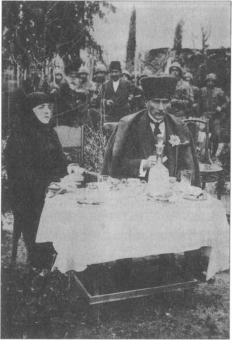
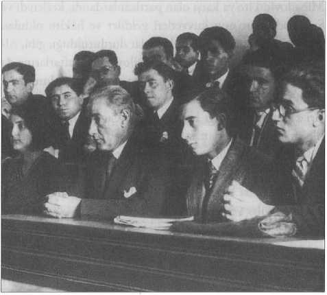

6
İNKILABLAR DÖNEMİ
İnkılablara Genel Bir Bakış
İNKILABLARA bir bütün halinde bakıldığında merkeziyetçi, kuvvetli yapılı, vatandaş haklarını teminat altına almaya çalışan bir devlet kurulduğu görülür. Laiklik hareketi tamamen vatandaşlığı yerleştirebilme amacına yöneliktir. Klasik Osmanlı toplumuna has bazı örgütlenme, âdet, örf ve gelenekler yıkılmıştır. Hatta Fransız Devrimi’nin bir uygulaması olarak loncalara, zaviyelere Gazi Mustafa Kemal Paşa son vermiştir.*75* (Loncaların akıbetini merhum döşemeciler lonca kethüdası Hüsnü Diker usta, “Rahmetli Atatürk cemiyetçilik sevmezdi” diye özetlemiştir.) Şüphesiz ki endüstriyel topluma uygun anonim yapılı ikincil grupların yeterince gelişememesi ve sadece geleneksel toplumun (etnisite, din temelli gibi) ikincil gruplarını tasfiye ettikten sonra modern toplum atılmalarının tıpkı iki dünya savaşı arasında bazı Avrupa ülkelerinde olduğu gibi kıyıda kalması yahut yasaklanması modern Türkiye’de dünyayı ve toplumu tanıyan, toplum seçkinlerinin kim olacağını anlayan politikacıların yetişmesine de engel olmaktadır. Kurulan, yaşamaya çalışan ve dağılan her partinin birinci meselesi, partinin gelişmesi için üye sayısı veya mali kaynak değildir; bunlar siyasi kadroları tanıyamamakta ve kendi programlarını yapacak kadrolara sahip olamamakta, mevcut programlarını geliştirecek kadrolar ve militanlara hiç sahip olamamaktadırlar. Bu cumhuriyetimizin en büyük sorunudur ve kısa zamanda çözülmesi gerekir.
“Hilafetin ilgası" konusu bu yeni durumda ideoloji ve yönetim birliğinin kurulması arzusudur. O yüzden de hilafet kısa zamanda kaldırılmıştır. Bu, aslında saltanatın ilgasından daha fazla tepki yaratmıştır. Kurtuluş Savaşı’nı beraber başaran kumandanlar bile (Kâzım Karabekir Paşa, Refet Paşa, vs.) bu konuda hemfikir değildi.
Gazi Mustafa Kemal Paşa (Atatürk) hariç, bu kumandanların hepsi her İnkılaba taraftar değildir. İçlerinde cumhuriyetçi, devrimci zihniyetle, Cumhuriyet idaresini kurmak isteyen tek kişi olarak Atatürk bir ölçüde İsmet Paşa ile yalnızdı. Onu takip eden insanlar içinde gerçekten bu inançta olanlar azdır. Fevzi Paşa, hatta harf inkılâbı sırasında İsmet Paşa, İnkılabı hikmet-i hükûmet kabilinden takip etmişler veya devletin bekası itaati gerektirdiğinden uymuşlardır. İsmet Paşa birçok reforma karşı çıkmakta birincidir. Fakat reformdan sonra, ilk olarak kendisi uygulamıştır. Bu, maiyetteki akıllı bir devlet adamının en birinci vasfıdır. Bu vasıf, Osmanlı devlet adamında belirgindir; “quod factum est factum est - ne ki olmuştur, olmuştur; o halde yola devam” felsefesi de denebilir. Osmanlı devlet adamı pragmatiktir. O yüzden hilafet kaldırılana kadar bir kısım yakın arkadaşları lidere karşı çıkmış fakat bu arkadaşların Cumhuriyet kurulduktan sonra kurdukları Terakkiperver Cumhuriyet Fırkası cumhuriyetçi olmuştur. Atatürk’ü bunlardan ayıran, daha baştan itibaren cumhuriyetçi olması, bazı şeyleri önceden görüp planlamasıdır. O yüzden Atatürk yaşadığı sürece ve öldükten sonra, etrafındakilerden çoğu davaya zorla kazandırılmışlardır. Gazi Mustafa Kemal ve arkadaşları Cumhuriyeti ilan ederek rejimin adını koydular, ancak, bu o kadar da kolay değildi. Çünkü mebuslar içinde hâlâ halifeyi ve padişahı isteyenler vardı. İkincisi, daha Cumhuriyet kurulmadan da önce, İstiklâl Savaşı’nın birçok kumandanı bile İstanbul’a girmek, onu geri alabilmek ümidinde değildi. Anadolu’nun bir kısmını kurtarmak onlara göre o an için yeterliydi. Hâlbuki Gazi Mustafa Kemal Paşa karşı tarafın açığını görmüş ve “Ordular! İlk hedefiniz Akdeniz’dir. İleri!” demişti. Cumhuriyet’in ilanı da böyle bir uzak görüşlülüğün eseridir. Atatürk
İnkılablarını yavaşlatan, hatta saptıranlar da yine etrafındakiler olmuştur. Bu kadrosuz ortamda Atatürk’ün büyük bir özelliği vardır ki o da ikna ve uyum sağlamadır.
1924 Anayasası
1924 Anayasası bizde yüzyılın ikinci yarısında alışılmış usulün aksine referandumla değil, doğrudan TBMM tarafından kabul edilen bir anayasadır. Böylelikle Kurtuluş Savaşı boyunca TBMM tarafından kabul edilen 1921 Anayasası da yürürlükten kalkmış olmuştu. 1293 (1876) Kanun-ı Esasisi ve 1921 Teşkilat-ı Esasiye Kanunu ise 1924 Anayasası’na da ismini vermekten öte, çoktan yürürlükten kalkmış sayılıyordu, zira Kasım 1922’de saltanat, TBMM tarafından lağvedilmiştir.
1924 Anayasası kurucu 1921 Anayasası’na göre sözde meclisin üstünlüğüne dayanır, çünkü icra onun kontrolündedir ve güvenoyu verilir.
Ama yasamanın ayrı bir kuvvet olarak düşünülmesi mümkün değildir. Bu yarı konvansiyonel gibi görünen sistem aslında Türkiye tarihinde icranın, yani hükümetin kuvvetini temsil edecektir. Ama daha da ilginci, ömrünün büyük kısmını tek parti rejimiyle geçirecek olmasına rağmen, 1924 Anayasası çok partili demokratik hayata da pekâlâ intibak edebilecek bir metindir. 1876 Kanun-ı Esasisi, Mebuslar Meclisi ve Ayan Meclisi’ni tanıdığı halde, 1924 Anayasası TBMM’nin getirdiği usulü, yani tek meclisi kabul etmiştir.
1924’ten beri anayasal sistemdeki en büyük zaaf yargı erkinin bağımsızlığının, hâkim teminatının iyi düzenlenememesidir. 1876’da söz konusu bile olmayan, bu nedenle çok sınırlı olarak anayasada “matbuat kanunu dairesinde serbesttir” ibaresiyle yer alan basın hürriyeti, her ne kadar çok kısa zamanda ihlal edilecek olsa da, 1908 Meşrutiyeti’ndeki tadilat dolayısıyla ve kesinlikle anayasal sistemimize ve siyasi hayata girmiş ve sansür kaldırılmıştır. O andan itibaren sansür rejimleri gayr-ı kanunidir. 1924 Anayasası’nda da bu kurum hakkıyla yerini almaktadır. Basın hürriyetinin ihlalinin 1924 Anayasası’yla bir ilgisi olamaz. TBMM’nin 1946 seçiminden sonra yeni seçilen milletvekillerinin konumunu aklamama (Zeki Rıza Sporel olayındaki gibi), kabul etmeme gibi eylemleri de aslında bu anayasanın getirdiği uygunsuz bir sistem değil, sonradan geliştirilmiş bir uygunsuzluktu. Gene hükûmet üyelerinin basın tarafından suçlanıp itham edilemeyeceği gibi uygulamalar ya da ispat hakkının tanınmaması da bu anayasayla ilgili olamaz.
Kanunların dışında 1924 Anayasası’nın her türlü partiyi yasaklaması düşünülemez. Teşkilat-ı Esasiye Kanun’unun ancak saltanatı özleyen parti ve siyasi faaliyetleri yasaklayacağı açıktır. Bunun dışında İnkılab kanunlarının anayasal güvenceye alınması dahi 1961 Anayasası’na ait bir hükümdür. 1924 Anayasası pekâlâ ulusal, sosyal, çok partili bir demokrasinin yaşamasına ve devamına müsait olan bir metindir. Üstelik dönemine göre açık, düzgün ifadeli bir anayasa metnidir. Şayet siyasi hayatımızda kısıtlamalar, TBMM’de dış politikanın tartışılmaması, askerî harcamaların ciddi denetimin dışında kalması gibi uygulamalar varsa, bunlar anayasanın değil siyasi hayatın gelenek ve siyasi terbiye anlayışının getirdiği ve barındırdığı tıkanıklıklardır.
Türkiye aslında 1924 Anayasası’nı ufak değişikliklerle muhafaza edebilirdi. Bu anayasada bulunmayan Cumhuriyet Senatosu gibi bir kurum ise 1961 Anayasası ile getirilmiş ve kimsenin itirazı olmaksızın 12 Eylül Anayasası ile kaldırılmıştır. Hatta 1961 Anayasası’nı hazırlayan bir grup dahi yeni tekliflerinde (1982 Anayasası’nda) senato için bir teklife yer vermediler. Zira Türk sosyal tarihine uygun bir kurum değildi ve parlamenter sistemimizde geliştirilip benimsenmemişti.
1924 Anayasası’nın ilk andaki en önemli özelliği, laikliğin bir ilke olarak metinde yer almamasıydı. Bu ilke 1928’deki değişiklikle ilave edildi ve bu arada cumhuriyetin bugüne kadar değiştirilmeyen ilkeleri de bu anayasada yer aldı.
Teşkilat-ı Esasiye veya 1924 Kanun-ı Esasîsi’nin yarattığı ortam, 26 yıllık tek parti, 14 yıllık çok partili uygulama ve 27 Mayıs hareketinden sonra yeni bir anayasayı doğurdu ve bu anayasa da bilindiği gibi 20 yıla ulaşamayan bir uygulamanın ardından ortadan kaldırıldı.
Gazi’nin Kurtuluştan Sonraki Hayatı
Latife Hanım’la Gazi’nin kısa süren evliliği çok yazılıyor. Abartılı yorumlara başvurulursa, Latife Hanım “Türk kadınlığını temsil eden ve Türkiye’yi muazzam bir değişime götüren bir büyük portre" olarak çiziliyor. 19. asırdan beri önemli kadın aydınlar vardır. “Latife Hanım’ın o gruptaki yapıcı rolü nedir?" sorusuna cevap veren bir eser bulunup okunamadı. İzmir’in kurtuluşundan itibaren İsviçre’de okumuş olan Latife Hanım, Gazi Paşa ile temasa geldi. Yabancı dil bilgisi (üç dili okuma ve yazmayı biliyordu) ve Avrupa’yı izlemesi Başkumandanı etkilemiş, model devlet reisi eşi böyle olmalıdır diye düşündürmüştü. Latife Hanım’ın bir Türkiye reis-i cumhurunun eşi olmanın ne olduğunu pek de iyi anlamadığı açıktır. İkincisi, Türkiye’de bir mareşalin ne olduğunu da bilmiyordu. Böyle lider bir kumandanın eşinin vagonun penceresinden sarkıp ona, “Kemal” diye seslenmesi aslında 1920’lerde hiçbir yerin protokolüne uymazdı. Rıza Nur’un hatıratını okuyanlar bilir ki Rıza Nur’un eşi eski rejime mensub paşalardan birinin kızıydı ve psikolojik sorunları vardı. Latife Hanım İstanbul’da onunla ahbaplık ediyordu. Oysa bu mevkide biri (yani first lady) muhalefetten birileri ile temas etmemeliydi.
Reis-i cumhur eşi, first lady olduğu zaman, sorumlulukları olmayan ve yetkileri sınırlı bir devletlinin eşi gibi davranamazdı. Mesela birilerinin hanımları ile çatışırsa, konu derhâl başka alana da sıçrar, birdenbire o büyük mareşale, kurucu cumhurbaşkanına mevkiine göre hitap edemeyen veyahut hakkında kinayeli konuştuğu adamlar düşman olmaya başlardı. Maalesef Latife Hanım öyle görülüyor ki Türkiye şartlarında bir kurucu cumhurbaşkanının ve bir mareşalin eşi olmayı bilemedi. Evlilik bu nedenle bitti, daha doğrusu tek taraflı bitirildi.

Mustafa Kemal Paşa ve eşi Latife Hanım, 1923.
Özel Hayatlar ve Tarihçilik
Tarihî şahsiyetlerin portrelerini çizmek ve hayatın teferruatını yaşamlarından çıkararak anlamaya çalışmak mevcut bir yöntemdir ve yeni de değildir. Ciddi tarihçilikte yöntemi yoktan var edemezsiniz, bu tarihin diğer bilimlerden ayrılan bir özelliğidir. Bir tarihçi kullandığı malzemenin kullanımındaki pekinlik, değerlendirme ve kompozisyonu çizme safhasında sanatçı üslubu ve renkliliği de koyar. Tarih sadece bir bilim olmayıp Droysen’in tabiriyle “bilimin çok üstündedir.”
Bu açıdan baktığımızda Thukydides ile Fernand Braudel arasında yöntemler açısından bir fark, değişme ya da gelişme yoktur. Tabii kişisel özellikleri tasvir ederek tarihî portre çizmek bizde uygun değildir. Bu alanda Türkiye tarihçiliği çok çıkmaz içindedir, çünkü bunların kolay iş olmadığının farkında değiliz. Bir-iki dedikodu ve vekayiname tasviriyle tarihî portre çizilemez. Çok iyi bilgi toplanması ve incelenen dönemin kültürel eksenlerini iyi tespit etmek gerekir.
Bugün son derece bilgisiz insanlar Atatürk üzerine konuşuyor ancak bu ne tarihçilik ne de başka bir tür metindir. Bizim ülkemizde sağcısı da solcusu da araştırmadan yaratmaya meraklıdır. Çağdaş tarih portrelerinin malzemesini daha yüklü ve yöntemlerin daha hassas ve mukayeseli olmasını isteriz. Elinizdeki kitap için Alexandre Jevakhoff’un Kemal Atatürk kitabını okudum.*76* Bu kitap, çok dikkatli, abartıcı ve genişletici yorumlar yapmayan bir portre çizimi olarak görünüyor. Jevakhoff Fransız’dır, fakat Rus Amiral Jevakhoff’un torunudur. Rusya tarihçilerinin malzemeye ve metne sadık kalan extrapolation (genişletici yorumu) içinde daha ciddi bir Atatürk portresi çizmiştir. Zira herhangi bir Osmanlı’nın portresini bu açıdan çizmek zordur. Bunun sebebi de basit; malzeme kıtlığıdır.
Gazi Mustafa Kemal Paşa ve eşi Latife Hanım Adana’da Hükûmet Konağı’ndan çıkarken, 16 Mart
1923.
Atatürk’le ilgili böyle yalan yanlış portre çizen iki tip var, her ikisi de bu yöntemi meslek edinen yazarlardır. Biri oturuyor, bunları idare ediyor. O idare eden önemli bir misyon sahibi, belirli gruplar adına konuşuyor; birileri de bunları yayımlıyor. Böylelikle tarihî kişilik yıpratılmaya çalışılıyor. Bunun arkasında sadece bir inanç ya da bir ideoloji kaygısı yok. Bu aynı zamanda bir bölünme, bir çatışma ortamı yaratma girişimidir. Şüphesiz bunlara güvenilemiyor, çünkü bu yazarlar tarihî bilgi açısından çok zayıflar; bir de bilhassa etnik eğilimlerle portre çizen oldukça abartılı yayınevleri var: Tabii bir amaçları var; bu, tahripkâr (destructive) milliyetçiliğin hiçbir yerde vazgeçmediği bir unsurdur ama söz konusu etnik gruplar kendi kültürlerini, millî edebiyatlarını, tarih araştırmalarını geliştirdikçe bu yöntemi takip ederler.
Kahramanlarını itibarsızlaştıran toplumlara Avrupa’da da, dünyada da tahammül etmezler. Bu gibi durumlarda kendini inkâr eden bireyi şüphesiz savcıdan evvel toplum mahkûm eder. Mesela bir öğrenci bir ulusal veya uluslararası toplulukta bu tip sözler ederse, kendisine “lunatik" yani delirmiş gözüyle bakarlar, ciddiye almazlar, derece vermezler, “nafile" kabul ederler. Doğu Avrupa’da, Orta Avrupa’da, Batı Avrupa’da bu konulara hoşgörü gösterilmez.
Atatürk Olmasaydı da Türkiye Bir Şekilde Bağımsız Olabilirdi, Ama...
Atatürk olmasaydı ülke kurtulur muydu? Bu sorunun cevabı için “olabilirdi" demek lazım. Tedricen belirli sınırların içinde kurtulurdu, ama söz gelimi İzmir ve geniş hinterlandı (ard ülke) bizim olmazdı. Oraya Yunanlılar gelir, yerleşirlerdi. İşgalin ilk zamanında oradaki yerli Yunanlıların ve Venizelos Hükûmeti’nin kozmopolit Levantenler ile anlaşamadığı belliydi ama elbet anlaşırlardı. Bunlar tüccardı ve Yunan anakarasından nüfus sürekli geliyordu, daha da hızlandırılırdı. Çünkü İzmir ve hinterlandı adalarda sürünen insanlar için çok bereketliydi, cennetti. Türkiye de garip bir ülke olarak ortaya çıkardı ki Türk milleti ortadan kalkacak değildi. O zaman nüfus 13 milyondu. Bu önemli bir rakamdı ama bu harap nüfusun rehabilitasyonu, eğitimi çok yerinde sayardı, iktisadi ve sınaî gelişme imkânı olmazdı.
“Demokrasi de gelirdi”, diyenler var. Demokrasi bir ülkeye ithal gelmez. Mütareke döneminde İstanbul’da sendika kurulmuş, Komünist Partisi varmış, bazı filmler gösterimdeymiş gibi belirtiler yeterli değildir. Bunlarla bir topluma demokrasi gelip yerleşmez. Yerli halk, ülkenin sahipleri o ihtiyacı hissedip, demokrasiyi kendileri tesis etmelidir. Yirmi yaşındaki üniversiteli genç bazı filmleri görmek istiyorsa iyidir, sansür orada çatlamıştır. Ama millette talep yoksa o filmi getirip göstermek mümkün değildir ve ne ifade eder? Demokrasi mahallî tefekkürün kaynaması, mahallî müesseselerin gelişmesidir ki o da o kadar kolay bir gelişme değildir.
Farzımuhal, “Atatürk değil de Kâzım Karabekir Paşa devlet başkanı olsaydı”, deniliyor. Kâzım Karabekir bildiğiniz gibi yetenekli ve bilgili bir kurmay ve cesur bir kumandandı ve İsmet Paşa gibi çok dürüst ve inanmış birisiydi. Her iki paşa da yaşam biçimi olarak muhafazakârdır. İsmet Paşa’nın da, Kâzım Paşa’nın da evlerinde bohem bir hayat tarzı yoktur. Kâzım Karabekir tutucu bir adamdı. Mesela İzmir iktisat Kongresi’nde Latin harflerini reddetmiş ve “Kesinlikle olmaz, Azeriler saçmaladı” demiştir. İsmet Paşa’nın da harf devrimine sıcak baktığı söylenemezdi.-77- Keza, Rauf Orbay çok daha muhafazakârdır. Birbirlerine benzerler, onlara benzemeyen kişi bizatihi Gazi Mustafa Kemal (Atatürk) Paşa’dır.
Tarihi büyük ölçüde kişiler yapar. Birincisi, o bir örgütlenme dehasıydı. Kendini çok iyi kontrol etmesini biliyor, çok iyi gizlemesini biliyor, zamansız ileriye atılmıyor. Bu özellik 20. yüzyıl liderlerinin ekserisinde yoktur. İkincisi, fevkalade bir zamanlama tekniği yanında, bilinecek şeyleri çok iyi biliyor, tecrübelerini çok iyi kullanabiliyordu. Bütün o subay takımının sınırsız tecrübesi ve dünya görgüsü vardı. Onların içinde bu eğitimi kullanmasını en iyi o biliyordu ve üzerinde durmamız gereken husus, Mustafa Kemal’in hiçbir zaman ve zeminin olumsuzluklarına teslim olmamış olmasıdır. Çok önemli bir özellik; İstiklâl Savaşı başladığı zaman, Birinci Dünya Savaşı’nın hatalarının da etkisiyle bir daha harbe girmeyelim diyenler vardır. Bence onların hepsine hain denemez, çünkü ileriyi görememişlerdir. Bir de “Şimdi şurada dur, fazla ileri gitme” diyenler oldu. Mesela Batı Anadolu’nun hiçbir şekilde kurtarılacağına inanmayan, bir sürü İstiklâl Savaşı kumandanı bile var. Eğer hedefi ileriye koyuyorsan o bir dehadır ve deha dâhilere has bir inattır.
Siyaset olarak da öyledir; dehadır. Ama askerî dehası şu; ricat savaşını bir bozguna değil bir politikaya, bir askerî stratejiye çevirmiştir. Askerini iyi tanıyor, seviyor ve güven veriyordu. Bizim siyasi edebiyatımızda ilk defa Taner Timur, J-78 Carlyle ve Tolstoy’a başvurarak tarihte ferdin rolünü tartıştı. Muhteşem portre örnekleri kullanan Thomas Carlyle, tarihi fert yapar, diye özetlenir. Tolstoy ise “Fert çürüyen kayayı parmağıyla devirir” der. Bu görüş kalabalığında Atatürk’ü yerine koymak ve yerini tespit için çok mürekkep akıtılacaktır.
İçten Gelen Muhalefet: Terakkiperver Fırka
Terakkiperver Fırka’da İttihatçılar toplanmıştı. O zaman o kadar solcu yoktu. Solcular sonra Serbest Fırka’ya dâhil olmuşlardır. İttihat Terakki kalıntısı orada da olsa da Terakkiperver Fırka’da daha çok İttihatçı vardı ve benzeri başka gruplar da vardı. Bu nedenle Ankara partiyi tehdit olarak görmüştü. Cumhuriyet sırf padişahı değil, İttihatçıları da kendi için tehdit olarak görüyordu. 1926 suikastının arkasından gelen tevkiflere, kovuşturmalara bakıldığında trajik unsurların olduğu görülür.
Kemalist Devirde Muhalefet
Şüphesiz ki Atatürk devrindeki muhalefetten söz ettiğimizde sadece partilerden bahsedemeyiz. Esas olarak Terakkiperver Cumhuriyet Fırkası 1924’ün ve Serbest Cumhuriyet Fırkası 1930’un muhalefetidir, ikisi de kısa ömürlü olmuştur. Başkanları Atatürk’ün yakın arkadaşlarıydı. Birinci grup Kâzım Karabekir ve Ali Fuat Paşa’lardır ve Mustafa Kemal Paşa’yla anlaşmazlığa düşmüş, daha muhafazakâr yapılı bir Jön Türklüğü benimsemiş ve çok büyük taraftar toplamışlardır. Amaçlarının dışında kalan ama partiye gelen grupları reddetmediler ve yanlarına aldılar. İkincisi doğrudan doğruya tayin ve ricayla gelen bir başkandır ki o daha fazla taraftar toplamıştır. Partinin içinde hem fundamentalist diyebileceğimiz takım hem de solcular vardı. Ama muhalefetin bu karmaşık yapıyla ve kontrolsüz reaksiyonla devamı olmayacağı da belliydi.
Serbest Fırka beklenenin aksine, hızlı bir şekilde büyüyerek örgütlendi. Muhalefetin içinde sadece bundan 6 sene evvel dışlanan tarikatların mürit ve mensublarının bulunduğunu düşünmeyelim. Bunların yanında kasaba eşrafından CHP’lilerin dışında kalanlar da bu harekete intisab ettiler. Böylece bazı CHP üyelerini de aralarına katmış oldular. Serbest Fırka, milletvekili seçimlerinden önce aniden yapılan belediye seçimlerinde bile büyük başarı kazandı. Ancak partinin seçim başarısından çok kitlelerin reaksiyonu ürkütücüydü. Bilhassa İzmir trajik bir hortumun içine girmiş gibiydi. Başvekil İsmet Paşa’ya muhalefet büyüktü ve vilayet yönetiminin acemice ve kabaca müdahalesi sadece kitleyi tahrik etmeye yaradı. TBMM’deki suçlamalar ise mizaç ve eylem itibariyle bu gibi çatışmaların dışında kalmaya yatkın olan Fethi Okyar Bey’i hedef almıştı. Bütün bunların sonunda muhalefet partisi kapatıldı ve belediye reislerinin çoğunluğuna işten el çektirildi. Bir hafta sonra, 23 Aralık günü patlayan Menemen olayı âdeta muhalefetin susturulmasına taraftar olanları “Biz demedik mi?” havasına soktu.
Menemen’de Nakşi oldukları söylense de mahiyetleri el’an tartışmalı olan, Giritli Derviş Mehmed isimli hiçbir tarikatın silsilesine oturtulamayan birisinin etrafında toplananlar bir ayaklanma çıkardılar. Bu ayaklanma bir çarşı meydanı gösterisidir. Olayı durdurmaya çalışan teğmen rütbeli yedek subay Mustafa Fehmi Kubilay’ı vahşi bir şekilde şehit ettiler. Gazi Paşa’nın reaksiyonu ve muhalefeti susturma konusundaki tereddüttü yerini hiddete bıraktı. Rivayete göre Paşa kasabayı toptan sürmekten dahi söz etmiş, sonra zecri tedbirler, muhakeme ve idamların ardından yatışmış.
Menemen Ayaklanması cehaletin şartları değerlendirmekte ne kadar kolay yanılabileceğini ve eyleminin sonsuz bir şiddete uzanacağını gösterir. Ancak bu olay Türkiye için yaygın bir dini ayaklanmanın başlangıcı olarak nitelendirilmez. Bunun yanında yaşananlar bizzat Serbest Fırka mensublarının dahi parti defterini kapatmalarına neden olmuştur. Bu olay etraftaki dünyanın şartlarına da bakarak Türkiye için çok partili demokratik rejimin kurulmasını bilinmeyen bir tarihe tehir etti.
Atatürk devrinde Türkiye Komünist Partisi (TKP) vardı. TKP’nin genel sekreteri Vedat Nedim (Tör) Bey Berlin menşeiliydi. Almanya’daki
Spartakist harekette gelişmeler vardı. Komünist Parti’de Vedat Nedim’e hain diyenler olduğu gibi onun entelektüel kapasitesine hayran olanlar da vardı. Komitern dosyasında layiha olarak tek beğenilen ve hayatta kalan onun Politbüro’ya (Merkez Komite) verdiği layiha Arap harfleriyle tutulmuştu. Burada kapıcıların ve şoförlerin örgütlenmesinden söz ediyor ki doğru bir yaklaşımdır, memlekette sınıf coğrafyası ve yapısından ilgili bilgilere sahip olmak için bu ikisinden birden yararlanmak lazımdır. Unutmayalım Şükrü Kaya da kendi rejimi için aynı zümreyi kullanmıştır.
Şevket Süreyya Bey Sovyetler Birliği Komünist Partisi üyesiydi. Onun da kısa bir cezaevi yaşamı olmuştur fakat rejim onu benimsemiştir. Çünkü Moskova’nın Kemalist rejimle pek çatışmaya girmek istemediği açıktı. Kendisi hem Millî Eğitim Bakanı Mustafa Necati’yle çalışmış hem de İktisat Umum Müdürü olmuştu. İkinci Dünya Savaşı’nda gıda tevzi meselesinde bir parça düzen varsa onun etkisiyledir.
Kemalizm, komünistleri hayalperest olarak görüyor, fakat bir nevi yola gelmek ve rejimle bütünleşmeye yanaştıkları zaman da fırsat veriyor ve dışlamıyordu. Babayani bir ceberut devlet görünümü vardı ve aynı durum Atatürk devri boyunca sağcı, ırkçı, kafatasçı dediğimiz takım için de geçerli oldu. Bu aşırı Türkçüleri Kemalist rejim dışlamadı. İleride detaylarını anlatacağımız en ilginç vaka, üç ismin, Hüseyin Nihal Atsız, Orhan Şaik Gökyay ve Pertev Naili Boratav’ın bir araya gelmesidir; üçü de Mehmed
Fuad Köprülü’nün asistanlarıydı. Tarih
Kongresi’ndeki çıkışından dolayı Reşid Galip, Zeki Velidi (Togan) Bey’in işine son verince onu destekleyen bir telegram çektiler. Hemen üniversitedeki akademik hayatlarına son verdiler ve liselere tayin ettiler. Anadolu liselerinde hocalıklarının mutlaka etkisi oldu. Mesela
Balıkesir’de Abdülbaki Gölpınarlı’nın hocalığından dolayı Halil İnalcık gibi bir zeki, çalışkan genç ortaya çıktı. Kastamonu ve Konya için de aynı şeyleri söyleyebiliriz.
Bu iki grup da İsmet İnönü devrinde çok fena hırpalanmıştır ve Türkiye münevverleri birbirlerine kan düşmanı kesilmişlerdir. O kadar ki, daha evvel telegram (telgraf) çeken üç arkadaş bile birbirine düşmüştür.
Türkiye münevverlerinin asıl yediği darbe 47 Üniversite Olayları’dır. Bilhassa Dil ve Tarih- Coğrafya Fakültesi’ndeki büyük temizlemede ve sonraki dönemde Amerika’da sağ liberallerle düşüp kalkan Muzaffer Bey (Şerif) şüphesiz Ankara valisinden gördüğü hareket üzerine dilhun oldu, küstü, gönlü kırıldı ve buradan ayrıldı.
Ankara Valisi Nevzat Tandoğan istenmeyen bir vali tipidir. Maalesef Gazi Paşa’nın kontrolü dışında kaldığı ve bazı eylemlerinin ön planda Başvekil İsmet Paşa tarafından müsamahayla karşılandığı anlaşılıyor. İleride, 1946’dan sonra rejim ve İsmet Paşa idaresi onu sahiplenmeyince Haşmet Orbay davasından dolayı mahkemeye mevcutlu olarak şahadete celbe edildi, ancak sanık da olabilirdi. Daha sonra da yeis ile intihar etti.
Valinin sınırsız kabalığı Türkiye’nin bu asrın en önemli sosyal-psikologlarından birini Amerika’ya kaybetmesine neden oldu. Şüphesiz ki Kemalist devrin daha inayetkâr ve affedici tutumuyla sonraki CHP dönemi arasında da çok fark vardır.
Kâzım Karabekir
Kâzım Karabekir Paşa, Mehmed Emin Paşa’nın oğludur. Başarılı bir Harb Okulu ve kurmay eğitimi görmüştür. Mustafa Kemal Paşa ile aynı kuşaktandır. İsmet Paşa ile çok erkenden arkadaş olduğu halde, Mustafa Kemal Paşa’yı uzaktan tanımış fakat kendisine hayranlık ve bağlılığını Mütareke döneminde bildirmiştir. Bu desteğini devam ettirmiştir ki İstiklâl Savaşı tarihimizin en önemli, en faziletli olayıdır.
1948’de TBMM başkanı iken vefat eden Korgeneral Kâzım Karabekir Paşa, herkesçe malum, Kurtuluş Savaşımızı başlatan Mustafa Kemal Paşa’nın baş destekçisidir. Doğu’da kumandasında olan 15’nci Kolordu gerek teçhizatı gerekse o zaman için kayda değer olan silah sayısı ve terhis edilmeyen efradıyla tam teşekküllü bir kuvvetti. Üstelik Doğu Cephesi’ndeki karışıklıkları yatıştıran ve sınırlarımızı berkiten antlaşmaları bu kuvvetin zaferleri sağlamıştır. İstanbul Hükûmeti’nin emirlerine rağmen Mustafa Kemal Paşa’nın emrine giren Karabekir Paşa, II. Meşrutiyet devrinde gençleştirilen ordudaki genç kumandanların içinde bildiği lisanlar, tarih, coğrafya bilgisi, musikideki ustalığı ile en göze batan, aydın bir subaydır.
Erzurum Kongresi öncesi tutuklanması emri gelen ve artık müstafi bir asker olan Mustafa Kemal Paşa’ya bizzat giderek, “Paşam, ben ve kolordum emrinizdeyiz” demesi Türk tarihinin dönüm noktalarından birisi olduğu gibi, çok etkileyici bir sahnedir.
Parlak kumandanlığının yanında Türk çocuklarına eğitimleri için bıraktığı sayısız şarkı, okul tiyatrosu eserleri, şiir, askerî edebiyatımızın en önemli eserleri arasında yer alan İstiklal
Harbimiz, Hayatım, siyasi tarihimizin önemli eseri olan İttihad ve Terakki ve Birinci Cihan Harbi’ne Nasıl Girdik? gibi kitapların herkes tarafından okunması gerekir.*79* En önemli hizmetlerinden birisi uzun süren harblerin yetim bıraktığı 6 bin çocuğu okullarda yetiştirmesi ve hatta zamanın ortalamasının üstünde nitelikli bir eğitim verdirmesi olmuştur.
Devrimler onu yapanların bir arada yürümesini her zaman güçleştirir. Nitekim Terakkiperver Cumhuriyet Fırkası deneyiminden sonra, Kâzım Karabekir Paşa siyasi hayatın dışına itilmiştir. Eserleri üzerinde kısmen yasaklama ve sansür uygulandığı da bir gerçektir. 1926 İzmir suikastı davasında, Terakkiperver Fırka’daki durumu bahane eden bazı kimseler tarafından yapılan mesnedsiz suçlama ile sanık olarak yargılanmıştır. Burada gerek orduda kendisine bağlı olan ve kendisini takdir edenlerin ve gerekse yakın arkadaşı İsmet Paşa’nın desteği açıktır ve davada aklanmıştır.
Gazi Mustafa Kemal Paşa, Latife Hanım ve Kazım Karabekir Paşa ile beraber görülüyor, Edremit civarları, Şubat 1923.
1939 yılında İsmet İnönü tarafından İstanbul milletvekilliğine seçtirildi. 1946-48 döneminde Demokrat Parti hareketine katılmadığı gibi, CHP grubu tarafından TBMM Başkanlığına aday gösterildi ve 27 Ocak 1948’deki ölümüne kadar bu makamda kaldı. Bir bakıma, TBMM’nin ilk reisi olan silah arkadaşı Mustafa Kemal Atatürk’ün haleflerinden oldu. Onun ardından İstiklâl Savaşı’nın diğer kumandanı olan Ali Fuat Cebesoy da kısa bir müddet TBMM başkanlığı yapmıştı.
Rauf Orbay
Hüseyin Rauf Orbay da 1880’liler kuşağındandır. Babası Amiral Mehmed Muzaffer Paşa idi. Rauf Bey 1899’da teğmen rütbesiyle Deniz Kuvvetleri’ne katıldı ve 1918 yılına kadar değişik savaş gemilerinde görev yaptı. Balkan Savaşları döneminde Hamidiye kahramanı olarak nam saldı. Donanmanın ne İtalya’ya ne de Averof zırhlısına sahip Yunanistan’a düzenli direnmesi söz konusuydu. 20. yüzyılda ihmal edilmiş bu filo teknisyensiz, sadece subaylarla savaşa girmiş, Rauf Bey yapılacak en cesurane işi yapmış, Hamidiye ile Akdeniz’e korsan gibi çıkmış, Yunan limanlarını bombardımana tutmuştu. Bu deniz savaşı Balkan Savaşları tarihine bir katkıdır. Hiç şüphe yok ki şöhretli ve başarılı bir asker olan Rauf Orbay, diğerleri içinde saltanata en bağlı olandı. Nasıl hem İttihatçı hem muhafazakâr olduğu incelenecek bir konudur. Kâmil Paşa kabinesine karşı nefret duyuyordu. Rauf Bey Balkan muharebelerinde dahi politika yapacak kadar İttihatçı idi.
Rauf Bey Birinci Dünya Savaşı’nda, Bahriye Erkân-ı Harbiye Reisliği görevinde bulundu. Türk Millî Mücadelesi’nde başlangıçtan itibaren Mustafa Kemal Paşa’nın yanında yer aldı ve kongrelerden sonra, Heyet-i Temsiliye adına, son Osmanlı Meclisi toplantısına katıldı. Fiilen İstanbul’da son Meclis’e katılımını Mustafa Kemal Paşa tenkit etmiştir. Halk, Paşa Rauf Bey’in Felâk- ı Vatan grubuna “Fellâh-ı Vatan" diyormuş. Bu sırada İngilizler tarafından tutuklanarak Malta’ya sürüldü. Malta’dan kurtulduktan sonra ülkeye dönünce evvela Bayındırlık Bakanlığı, sonra Başbakanlık ve TBMM Başkan Vekilliği yaptı. O da Kâzım Paşa gibi Terakkiperver Cumhuriyet Fırkası’nın kurucularından biri oldu ve Atatürk’e karşı tertiplenen İzmir suikastında ceza aldı. Bu sırada yurt dışında idi ve Türkiye’ye 1935 yılında döndü. 1942 yılında Londra Büyükelçisi yapıldı. 1964’te vefat edene kadar üniversitelerde hocalık yaptı. Vatanseverliğinden şüphe edilmeyecek bir adamdı. Ancak şu unutulmamalıdır ki idealleri için can vermeye hazır insanların arasında fikir ayrılıkları her zaman olur. İhtilaller için kullanılan “Ev yapan balta dışarıda kalır" şeklindeki Rus atasözü açıklayıcı olabilir. Bizlere düşen tarih çizgisinin bu öncülerini kendi dünyaları içinde anmaktır.
Askerî üniformasını çıkaran Mustafa Kemal Paşa arkadaşı Hüseyin Rauf (Orbay) Bey ile Sivas Kongresi’nin yapıldığı binanın önünde, Eylül 1919.
Nutuk
Ulu önder Gazi Mustafa Kemal Paşa partisinin grubu dolayısıyla Türkiye Büyük Millet Meclisi önünde 15-20 Ekim 1927 tarihlerinde kesintisiz olarak büyük Nutuk’u okudu. Nutuk’un okunuş tarihi; Cumhuriyet’in ilanı, hilafetin ilgası, Türk Medenî Kanunu’nun kabulü, Takrir-i Sükûn Kanunu ve İzmir suikastını izleyen davalardan sonraya rastlar ki bu bir tesadüf değildir. Çok partili düzen konusundaki tasavvurlarına ara veren Gazi Paşa 1919’dan o güne kadarki yedi senenin muhasebesini yapmakta, yorumlamakta ve ortaya koymaktadır. Nutuk’un güzel bir dili vardır; 19., 20. yüzyıl dönemecindeki modern orduların subaylarının geniş kitlelere hitap için hem zengin hem de kolay anlaşılır bir dil kullanmaları kurmaylık eğitiminin gereklerindendir. Kendi sınıfının genç kumandanları arasında Cumhuriyet’in kurucusunun da böyle bir dil ve üsluba sahip olduğu açıktır. Gerçi padişahla makam-ı sadaretle olan görüşmelerinde ve telgraflarda protokol bakımından teşrifata uygun, ağdalı bir Osmanlıca kullandığı görülmektedir. Nutuk’un belgesel kısmındaki bu belgelerin görüşme ve yazışma üslubuna bakarak, “20. yüzyıl Osmanlıcası” denen dil ve kurmay subaylar ile Atatürk’ün dilini tasvir etmek ve değerlendirmek doğru değildir. Bütün 19. asır boyunca makam-ı saltanat ve sadaretle doğrudan yazışma ve görüşmelerde günlük dilden uzak böyle bir üslubun kullanılması âdettendi. Bu görüşmeler ve bilhassa yazışmalar ayniyle nakledildiğinde o üslûb kaçınılmazdır. Bununla birlikte bu ağdalı lügat, hatta yer yer cümle ve ifadelerin açıklamasına başvurularak Nutuk’un aslının ve dil üslubunun muhafazası hedef tutulmalıdır. Yapılan sadeleştirmelerin içinde Hıfzı Veldet Velidedeoğlu’nunki en uygun olanıdır. Nutuk’un yabancı dillere yapılan çevirilerinde ise bazen tamamen ilgisiz deyim ve kelimeler sehven kullanılmıştır. Bu bakımdan dengeyi koruyan çevirilerin yeniden basılmasını faydalı buluyoruz. Gençlik Atatürk’ün Nutuk’unu kendi üslûbuna en uygun ve zengin metinden izlemelidir.*80*
Bu toplumda Atatürk’ü zihinlerden silmeye çalışmak bir lükstür, lüzumsuz çabadır. Yanlış tanıtmaya çalışmak da, amatör tarihçilerin işi olsa bile, gülünçtür. Onun için girişilecek en önemli iş Nutuk’u, Atatürk’ün söylev ve demeçlerini ve maalesef büyük kısmı ortalarda olmayan CHP grup toplantı zabıtları gibi belgeleri derleyip okumaktır. Türkiye Cumhuriyeti Tarihi henüz tarihî incelemeleri, arşiv belgelerini toplamak ve tasnif etmek safhasındadır.
Dünya siyasal edebiyatında büyük liderlerin ebedileşen nutukları vardır. Bunlarda izledikleri siyaset ve yaptıklarının kitlelere anlatılması söz konusudur. Daha önce de bahsettiğim gibi, bunların içinde en kalıcı ve önemli örnek, imparator Augustus’un Ankara’daki Augustus
Mabedi’nin cella duvarlarında yer alan ve “Res Gestae Divi Augusti" diye başlayan nutkudur. Bu konudaki edebiyatın parlak örneklerinden sayılır ve “ Testamentum Ancyranum diye bilinir. Eski Türk tarihi için Bilge Kağan Yazıtı güzel bir örnektir.
Nutuk hiç şüphesiz 20. asrın siyasi liderlerinin icraatını anlattıkları eserler arasında müstesna bir yer tutar. Bir imparatorluğun Birinci Dünya Savaşı’ndan sonra yaşadığı çöküş ve Anadolu’daki direniş savaşının, bu savaşın başladığı Türkiye Büyük Millet Meclisi’nde, Cumhuriyet’e geçiş döneminin liderinin kendi ifadesiyle milletvekillerine nakledilmesidir. Bu nedenle okunduğu ve basıldığı günden itibaren Türkiye’de önemli bir yer edindiği gibi, çağdaş Türkiye’yi tanımak isteyen dünyadaki çevrelerde de okunmuştur ve bazı halde yabancı dildeki tercümelerin (mesela Rus Türkoloğu A. Miller’in Rusçası) sadeleştirme çabasıyla ortaya çıkan metinlerden daha düzgün olduğu da bir gerçektir.
Nutuk üzerinde söyleyeceklerimiz bu kadarla sınırlı kalamaz. Nutuk 1919-1926 devresinin tek tarihî metni değildir. Bazılarının iddia ettiği gibi, rejimin dayattığı “resmî tarih" görüş ve metni de değildir. Ama bu dönemi yapan, başkumandan ve devlet reisinin Yüce Meclis’e sunduğu bir bilançodur. Bu açıdan okunması ve değerlendirilmesi gerekir. Bu gerçek unutulmamalıdır.
Bazıları Nutuk’a Atatürk’ün savunması diyorlar. Bu savunma, bir mücrimin savunması değildir. Diplomasi platformuna çıkanlar, savaşanlar eğer kesin bir yenilgi almadılarsa daimî surette kendi nokta-i nazarlarından olayları tarif ederler. Buralarda bir gizlenme, karşı tarafı küçültecek bir iftira aramaktan çok, hakikatin bazı boyutlarına dikkat etmeniz gerekir. İstiklâl Savaşı’nda kumandanlar vardır. Bu kumandanların bazıları bu dönemde çatışmışlardır, aralarındaki münakaşanın ve tartışmanın nedenlerini kendilerine sormak gerekir. Kâzım Karabekir’in şimdi artık yeniden basılmaya başlanan İstiklal Harbimiz adlı eseri yanında Nutuk’un da yeri vardır ve başka biri yazacaksa ya da yazmışsa onun da çıkması gerekir. Daimî surette bir kongreye katılan diplomatların hepsinin kendi görüşleri, layihaları, tartışmaları bir arada ele alınır.
Cumhuriyet Halk Partisi II. Büyük Kongresi’nde
Gazi Mustafa Kemal Paşa TBMM kürsüsünde 36 saat 33 dakika sürecek söylevini okurken, 15 Ekim 1927.
Binaenaleyh Nutuk üzerinde değerlendirmelerin anlamsızlığı açıktır. Şuna dikkati çekmek istiyorum; bazı noktalarda hatırata bakarak tarih yazılıyor. Türkiye’nin yakın tarihinde hatırat, tarih yazmak için en zayıf metindir. Bu hatıratın birçoğu Nutuk’la mukayese edilmeyecek kadar hakikat dışı ve eksiktir. O kadar ki o hatıratı yazan insanlar, mesela Hüseyin Cahit’in, olayların cereyan ettiği sırada kendi gazetesindeki yazı ve makaleleri bu hatıratta söylediklerine de hiç uymaz. Dolayısıyla karşılaştırmalı tarama yapmadan bir tarih yazımına girmek çok yanlıştır.
Kürtlere Özerklik Sözü Vermiş miydi?
Kürtler arasında Birinci Dünya Savaşı’nın bitiminden beri zümre zümre, (grup grup) tepeden aşağıya ayrılık düşünen ve özleyenler oldu. 1925’te Kürtlerden Cumhuriyet’e gelen esas tepki şeriatın gitmesine karşı durmak denebilir. Ama tam olarak da öyle değildir, zira mesela Şeyh Sait İsyanı’nda Kürtçülük yapan grup ve görüşler ve bunlardan destekçi ve akıl verenler de vardır. Ama mesela Dersim olaylarında hâkim olan Kürtçülük değil, yerel isyandır. Orada bir grubun itaatsizliği söz konusudur, vergi meselesinden çıkıp büyüyen direnişe karşı genç Cumhuriyet’in tahammülü yoktu.
Öte yandan bazı Kürtler kendilerine başta bir özerklik sözü verildiği, ama bu sözün tutulmadığı iddiasındalar. Özerklik sözüne bakmak gerekir. 1918’de federatif yapı için söz konusu olan özerklik, Avusturya-Macaristan ve Osmanlı monarşisinin çöküşüyle bitmiştir. Rusya’da çökmüştür ve orada da bitmişti, fakat Rusya Çarlığı’nın çöküşünden sonra eski ve yeni anlamıyla komünizmle ve zorla, totaliter bir rejimle güya bir federalizm kuruldu. O federalizm değildi, zira, Sovyet federalizmi için bir anlamda polis rejimi, Stalinist anlayış, ona göre bir parti aparatı kurulması ve nihayet uysal bir halk lazımdır. 1919-1923 arası hiçbir realist politikacı federalizm gibi yapılanmalarla uğraşmaz. (Oysa Arşidük Rudolf bir yana, savaş başında öldürülen Veliaht Franz Ferdinand daha geniş bir federasyon taraftarıydı. O kadar ki birtakım arşidüklerin imparatorluk dâhilindeki lisanları öğrendikleri biliniyor. Mesela son veliaht bizim Osmanlı hanedanıyla da yakından dost olan Otto von Habsburg Almancayı, Macarcayı, Sırp- Hırvatça ve İtalyancayı eşit derecede iyi biliyordu, çünkü öyle yetiştirilmişti.) İkinci Dünya Savaşı’ndan sonra Tito da uğraştı. Yugoslav federalizmi de ümitlere rağmen devam etmedi ve sonuç feci oldu.
Zaten Mustafa Kemal Paşa gibi kurmaylar ve onun etrafındakiler de bu işte ciddi bir söz vermezler. Muğlak ifadeleri ciddi vaad olarak kabul etmek mümkün değildir. Birincisi bunların kitabında ve doktrininde böyle bir federalizmin yeri yoktur. Kendine göre tarihî, hukuki gerçek aramak ne kadar doğru ve geçerli olur?
Atatürk’ün Tarih Öğretimi
Biz Atatürk’le ne gördük? Biz Atatürk’le başka bir tarih öğretimi girişimi ve başka bir iddia ile gördük. Yeryüzünde itibar sahibi olmak öylece büyük devletlerin arasında bulunmak istiyor iseniz -ki Türk milleti bunu hak ediyor ve böyledir ve hukukunu korumak zorundadır- her şeyden önce hukuk sisteminiz de bu platformdaki diğer üyeler gibi olmalıdır. Atatürk bir milliyetçidir. Millî varlık ve itibar meselesi nedir? İsmini ve varlığını koruyan bir milletin bunun için zamanlara ve mekânlara hükmetmesi gerekir. Bu memleketin insanları, Mezopotamya arkeolojisinden başlayarak dünya tarihinde uzman olmalıdırlar. Bu konuları biz öğrenmiyor değildik, ama tercüme ve nakil kitaplardan değil, uzman olarak öğrenmek ve öğretmek lazımdır. Bu memleketin insanları dünyanın ne olduğunu bilmek istiyorlarsa sadece kendi ülkelerini değil, dünya coğrafyasını da tanımalıdırlar.
İnsanlar sadece tıb ve mühendislik için değil, tarih için, arkeoloji için, filoloji dalları için ve güzel sanatlarda ve musikide, orkestra ve operada, kısacası Batı müziğinde çalışmak için dışarıya yollanmaktadır. Bu dallar için eğitim bursu verilmektedir. Opera kurulmaya çalışmaktadır. Osmanlı İmparatorluğu’nda opera dinleniyordu. Hatta padişahlar opera ve operet truplarını izliyor, hatta muhtelif trupları Saray tiyatrosuna da davet ediyorlardı. Beyoğlu’ndaki tiyatrolarda da bu temsiller veriliyordu. Ama Türkiye opera kurmaya kalkıyorsa, bu önemli bir safhadır. Bunu Atatürk başlatmış, konservatuarlar kurmuştur. Daha önceki Musiki Muallim Mektebi’nin geliştirilmiş bir safhasıdır ve sahne sanatları, filarmoni ve tiyatro kurumları ve eğitimi devlet desteğindedir. 18. yüzyıl Rusyası’ndaki sahne sanatları ve musikiyi geliştirme programı Osmanlı Türkiyesi’nde mevzii olarak kalmıştır. Cari Ebert
Atatürk tarafından celb edildiğinde, Atatürk ona operayı kurmak için kaç yıla ihtiyacı olduğunu sorar, “Beş yılda yapabilir misiniz?" der. Cari Ebert de “Bu biraz zor" diye cevap verir. Atatürk hüzünlenir ve “Peki" deyip desteğe devam eder. Neticede opera Atatürk’ün ölümünden sonra gerçekleşmiştir.
Atatürk Türkiyesi bozkırın ortasındaki bir ışıltıdır. Fransızların Edebiyat yahut Almanların Felsefe Fakültesi dediği kurumun adı Dil ve Tarih- Coğrafya Fakültesi olarak düzenleniyor. Hitler iktidarının kıyıma uğrattığı akademisyenler İstanbul ve Ankara’da kadroları oluşturuyor. Bu fakülte henüz müstakil bir binaya sahip değilken 1935’te Halkevi (Türk Ocağı) binasındaki tiyatro salonunda açılışı yapılıyor ve dersler de Evkaf apartmanında (bugün Küçük Tiyatro’nun olduğu yer) yapılıyor. Üniversite bu fakülteden daha sonra, yani 1940’ta kurulacaktır. Fakültenin yeni binasını Türkiye için bir şans olan mülteci mimar Bruno Taut tersim ediyor. Üzerinde ısrarla durmak istiyoruz; Türk medeniyeti kendini değiştirmeyi, tenkit etmeyi, uyarlamayı bilen bir medeniyettir. Geniş bir coğrafyayı, çok da uzun olmayan bir tarih içerisinde değiştirmiş bu da birtakım temel konuları değiştirip uyarlamasıyla paralel gitmiştir. 20. yüzyıl Türk tarihinin eski dönemlerin ivmesini koruduğu görülür.
19 Haziran 1934’te İran Şehinşahı uzun Türkiye seyahatinin Ankara durağındadır. Rıza Şah Pehlevi Atatürk’le büyük bir ideolojik birlik içindedir. İran ve Türkiye arasındaki tarihî, bitip tükenmeyen rekabet durulmuş, Sadabat Paktı yılları yaşanmaktadır. İki liderin bir amacı da demir yolundan okula ve musikiye kadar iki ülkeyi Batılılaştırmaktır. Kabiliyetli bir halkın müzik öğretimiyle birlikte İran operası, senfonik müzik, resim ve heykel alanındaki koruyucu ve önemli kültürel atılmaları bu yıllarda başlamıştır. Atatürk âdeta iki milletin opera sanatına girişini, Halkevi’nde Münir Hayri’nin (Egeli) librettosundan çıkan ve Adnan Saygun’un bestelediği tek perdelik bir operayla açmıştır. Daha sonra Almanya’ya gönderilecek ve eğitimini tamamlayacak olan Semiha Berksoy da bu operada görev almıştır.
“‘Özsoy’ operası, bozkırdaki bir tiyatro binasında, duvarlarında Timurlenk’in mezarını gösteren bir barok neo-klasik Türk mimari eserinin içinde cereyan eder.
1934 yılında Meclis açışı konuşmasında, “Ulusal ince duyguları toplamak, onları bir gün önce genel musiki kurallarına göre işlemek gerekir. Ancak bu şekilde Türk ulusal musikisi yükselebilir, evrensel musikide yerini alabilir" demişti. Gerçekten de opera ve tiyatro sanatlarıyla Türkiye bir dönüşüme girmiştir. Bu dönüşümü bu vakadan tam 50 sene sonra Almanya’nın ünlü, büyük sosyoloğu Ralph Dahrendorf bir televizyon programında söyledi. Semiha Berksoy’un anılarını dinledikten sonra, “Bu Kohl ve Giscard gibi adamlar kendilerini ne sanıyorlar? Türkiye dönüşümü çok önceden gerçekleştirmiştir" demiştir. O yıllarda Türkiye Hitler’in zulmüne uğrayan insanların iltica noktasıydı. Wilhelm Kempff’in sınıf arkadaşı kabiliyetli bir müzisyen olan Eduard Zuckmayer Yahudiliğinden dolayı memleketini terk etmek zorunda kalmıştı. Gazi Eğitim Enstitüsü’nde yetiştirdiği öğrenciler on yıllar boyu devlet operasını ve senfonileri doldurdular. Onu şükranla anarlardı. Eduard Zuckmayer Almanya’ya dönmedi. Türk vatandaşlığına kabul edilerek, burada enstitünün bir odasında yaşadı ve öldü. Daha da ilginci Yahudi olmayan, ancak, Nazi tabiriyle “Judengesippt” yani “Yahudilerle kanka olmuş”, olan Paul Hindemith de gelmişti. Nazi çevrelerde sevilmeyen Paul Hindemith’in savunucusu çok ilginçtir. Aslında densiz bir iddiayla “Hitler’in orkestra şefi” diye nitelenen Wilhelm Furtwangler’in Deutsche AUgemeine Zeitung’un birinci sayfasında Hindemith’i Nazilere karşı savunan makalesi bilinmektedir.-82- Hindemith pek de rahat etmediği Nazi Almanyası’ndan sık sık Türkiye’ye gelir ve otururdu. Doğrusu yeni kompozitörlerin yetişmesinde ve kendi on iki füglü müziğinin burada tanıtılmasında büyük rolü oldu. Onun mali ve manevi bakımdan beslendiği ve huzur bulduğu ortamlardan birisi Ankara olmuştur.
Ne ilginçtir ki geleneksel klasik Türk musikisinin altın devrini de İstanbul ve Ortadoğu ülkeleri 1930’larda yaşadı. Radyoda musiki yasak edildi denen dönemde (kaç kişinin dinleyecek radyosu vardı) gazinolarda ve geniş bahçelerde halk en seçkin muganniyeleri, mugannileri dinledi, bestekârların önünde hürmetle eğildi.
Çankaya klasik Batı müzisyenleri ve operacıların (Semiha Berksoy, Nurullah Şevket Taşkıran gibi) davet edildiği ama aynı zamanda Safiye ve diğerlerinin de dinlendiği yerdi. Murat Bardakçı’nın deyimiyle Akdeniz bölgesinden 1930’lu senelerde dört güçlü kadın sesi çıktı: Mısır’da Ümmü Gülsüm, Fransa’da Edith Piaf, Portekiz’de Amalia Rodrigues ve bizde Safiye Ayla. İnsanlar bu dört kadını her yerde dinliyordu. Tabii Doğu’ya Batı yanaşmadı ama Batı musikisi hayata giriyordu.-83!
Tarih Algısı
Bazılarının iddialarının aksine Türk milliyetçi düşüncesi Türk tarihini bir eğitim aracı olarak kullanamadı. Okullarımızda faşist bir eğitim verildiğini, tarih ders kitaplarımızın insanları körü körüne milliyetçi yaptığı iddia ediliyor. Bu memleketin ortaokullarında, liselerinde okuyanlar ve müfredatı gözden geçirenler bu konuda bir tutarsızlık ve zaaf olduğunu görürler. Avrupa ve Rusya tarih eğitiminin tam aksine, Türk tarih eğitiminin zaafını müşahede ederiz. Bu tarih eğitimi fakir bir edebiyata dayanan, dünya tarihinden gittikçe tecrid edilen bir tarzdır. Peki, Türkler nasıl oluyor da millî bir kimlik çizgisine sahip olabiliyorlar? Çünkü bu coğrafya üzerinde kazanılan önemli zaferlerle büyük değişiklikler meydana geldi. Gene çok önemli savaşlar ve geri çekilmelerle, ıstıraplı toprak kayıplarıyla, göçlerle bugünkü Türk vatanı oluştu. Bunun tarihini bilmiyorsak da millet olarak içinden geldiğimiz yaşam ve büyüdüğümüz kültür bir hakikattir.
Atatürk ve Coğrafya
Biz Türklerin genel bir zaafı coğrafyayı, harita düzeyinde dahi bilmememizdir. Bu üniversite düzeyine kadar sürer. Öyle ki üniversite öğrencileri dahi harita izlemeyi ve yorumlamayı bilmemektedir. Bu nedenle de Türkler coğrafya düşüncesinden uzaktırlar ve tarihçiler dahi tarihi coğrafyasız yaparlar. Bunu nasıl yaptıklarına gelince; metinleri okur ve kopyalar, buldukları evrakları da araya sıkıştırırlar. Yaptığı çalışma orijinal olsa bile o kimsede hiçbir zaman tarih düşüncesinin oluşması mümkün değildir. Coğrafya bilmediği için o kişi aslında bir tür ümmîdir. Coğrafya bilmeyen tarihçi de olamaz. Mesela böyle bir kişinin kafasında şu soru uyanmaz: Roma İmparatorluğu’nun doğudaki halefi Bizans’tır. Bizans toprakları ise Osmanlı’yla çakışmaktadır. O kişi, bu duruma ilgi göstermezse Roma imparatorluklar teorisiyle de ilgilenmeyecektir.
Coğrafyayı, her şeyden evvel fizik koşullarını,yani yeryüzü şekillerini, iklim şartlarını iyi bilmek gerekir. Coğrafî bölgeler arasındaki iletişimi kavramak için iklim farklılıklarından haberdar olmak lazımdır. Bunları bir arada düşünemeyen kimselerin tarihçilik yapmaları mümkün değildir. Geçen asırların Türk okumuşları maalesef bu tip bilgi birikimine ve kullanma yöntemine sahip değildirler. Bu sebeple de Yeni Türkiye’nin tarih bilgini değilse de dâhi bir kurmay olan kurucu önderi sezgileriyle, bu memlekette İstanbul ve Ankara Üniversitesi’ni teşkilâtlandırmış ve ilgili fakültelerinin adını da Dil ve Tarih-Coğrafya Fakültesi koymuştur. Çünkü dilsiz ve coğrafyasız tarih yapmanın imkânı olmadığını çok açık bir şekilde görmektedir. Bu teşebbüs 1930’larda başlamıştı, yani kendisinin ölümünden biraz evvel talebe alınmaya başlamıştır. 1935-36 ders yılı olacaktır. İlk mezunlar; Halil İnalcık ve Muazzez İlmiye (Çığ) gibi kimselerdir. Daha ortada Ankara Üniversitesi yoktur, Siyasal Bilgiler Okulu (Mekteb-i Mülkiye) nakledilmiştir, daha evvelden kurulan Ziraat Enstitüsü ve 1925 yılında hukuk devrimi yapılsın diye kurulan Hukuk Mektebi vardır. Ancak bu, hukuk devrimi yapacak derecede bir fakülte değildir. Daha sonra mülteci Almanlar gelip hukuk öğretmeye başlamışlar ve bunları bir araya getirerek 1940’ta Ankara Üniversitesi kurulmuştur. Ama asıl parlak unsur Dil ve Tarih-Coğrafya Fakültesi’dir. Bu kurumun kütüphanesine müthiş paralar harcanmış, Dil, Tarih ve Coğrafyayla ilgili prehistoria, jeoloji, arkeoloji gibi bütün şubeler teşekkül ettirilmiştir. Bunları yaptığınız zaman, düşünce ve bilgi bakımından birinci kulvarda, gelişmiş memleketlerle yarışırsınız. Belki sizin endüstriniz yok, tahılla, incir, üzüm ve tütün ihracatıyla geçiniyorsunuz ama esas olan zamanları ve mekânları öğrenmektir. O zaman mühendislik, izabe (metalürji) vs. için gönderilen talebelerin yanında Bizantinistler de vardır. Bu öğrenim ve Batı filoloji ve tarihçiliğine giriş safhalarının behemehâl tamamlanması lazımdır. Bunlar olmadan Türkiye’de sıhhatli bir tarih yapmanın imkânı yoktur. Yukarıda daha ayrıntılı bir şekilde bahsettiğimiz gibi, Türkiye kapalı köylerde yaşayan bir ülkeyken, İkinci Dünya Savaşı’ndan sonra dünyaya entegre olup bir birikim sağlayabilmiştir. Peki, bu başarıyı sağlayan elemanlar nereden çıktı? Okullar imparatorluktan kalmaydı; Cumhuriyet, üstüne Dil ve Tarih-Coğrafya Fakültesi, Ziraat Enstitüsü gibi çok iyilerini ilâve etti. Buralardan yeni entelektüeller çıktı. O sebeple Cumhuriyet bir seferberliktir.
Atatürk, Arkeoloji ve Müzecilik
19. yüzyılın dünyası Mustafa Kemal’in yetiştiği muhiti izah ediyor. Kuşkusuz Fransızcası okuldandır, ama arkadaşı Ömer Lütfi’nin eşi Corinne Lütfi ile dostluğu sayesinde bu dilini yazılı ve sözlü olarak geliştirmiştir ve dönemin ataşemiliterlerinin hepsi kadar iyidir. İstanbul’da belirli muhitte dans etmek, müzik seansları ve alafranga orkestraları dinlemek âdettendi. Bunun dışında İstanbul ve Selanik’te Batı kültürünün bu görünüşteki âdetlerine, bilgi birikimine intibak mümkündü ki müzeler ve arkeoloji bunların başında geliyordu.
Aya irini Kilisesi bir askerî sancak ve silah deposuydu. Burada ilk arkeoloji müzesini kuran, kütüphane ve vakıf kuran bir aileye mensub olan ünlü Sermet Muhtar Alus’un da dedesi, Rodoslu Tophane Müşiri Fethi Ahmed Paşa’dır. 1894’te mimar Alexandre Vallaury tarafından inşa edilen Arkeoloji Müzesi’nde zamanı için, hatta bugün için bile çok zengin bir seminer kitaplığı vardır ki bu kitaplığı meydana getiren sadrazam da Ahmed Cevad Paşa’dır. Ahmed Cevad Paşa dört Avrupa dilinde ve Osmanlıca seminer kitaplarını bağışlamıştır. Hakikaten bilgili aydın bir kumandandır, genç yaşta mareşal ve sadrazam olmuştur, matematik üzerinde Fransızca monografileri vardır ve o devirdeki literatürde bilinmektedir. Osmanlı askerî tarihi üzerinde de yine bazı monografileri vardır. O bakımdan böyle bir askerî ve sivil ortam söz konusudur. Gezdiği dünyanın arkeoloji kalıntılarını da tetkik eden birisidir ki bu dikkat edilecek bir husustur.
Geçmiş asırlarda eski eserlere Mimar Sinan gibi mimarlar dikkat ediyordu ve buralardan esinleniyordu. 19. asırda daha bilinçli bir yaklaşım vardır. Dolayısıyla Mustafa Kemal Paşa, Cumhuriyetimizin kurucusu Kemal Atatürk bir arkeolojik merakla hayata atılmış ve bunu perçinlemiştir. Yetiştiği ortamın böyle bir birikimi vardı.
Bu mirasın bize nasıl geçtiğinin üzerinde durulması gerekir. Bu mirasın geçişindeki en önemli nokta Osmanlı Darülfünun’unda, yani 1900’de kurulan üniversitede veya 1840’larda teşkil edilen kız ve erkek öğretmen okullarında (Darülmuallimat ve Darülmuallimin) arkeoloji dersinin de olmasıdır.
Arkeoloji eğitimini Osman Hamdi Bey ve kardeşi Halil Ethem Eldem müzede veriyor. İlk büyük arkeologlarımız Aziz Bey ve arkadaşları bu ortamda yetişmişlerdi. Hatta Topkapı Müzesi’nin ilk müdürü olan Tahsin Bey de aslında bir arkeoloji asistanı olarak o müzede bu saydığım kitaplıkla, bu çevrede yetişmiştir.
Arkeologyayı üniversiter bir bilim haline getiren doğrudan doğruya Cumhuriyettir ve Atatürk’ün talimatıyla olmuştur. Bu, 1933 üniversite reformunda İstanbul’da Edebiyat Fakültesi’nde ve Ankara’da Dil ve Tarih-Coğrafya Fakültesi’nde gerçekleşmiştir.
Bu arada Hitler Almanyası’nı terk etmek zorunda kalan bir sürü üst grup uzman Türkiye’ye sığınmışlardı ki bunların başka yerde iş bulmaları da mümkün değildi. Arkeolojinin en önemli dalı olan filoloji burada tamamlanmıştır. Çünkü Osmanlı arkeolojisinde filoloji unsuru son derece zayıftı^84 ve bu eksiklik Cumhuriyette tamamlanmak zorunda kalınmıştır.
İstanbul’daki fakülte binası sonradan şekil değiştirmiştir. Sedat Hakkı Edhem Bey’in yaptığı fakülte binasıdır. Ankara’daki Dil ve Tarih- Coğrafya Fakültesi binasının mimarı Berlin’i süsleyen büyüklerden biriydi. İlginçtir ki Duşanbe’de bile bir binası vardır ve tabii Ankara ve İstanbul’da da vardır. Binalarının, özellikle Ankara’dakilerin her köşesi ayrı bir buluştur. Bruno Taut ve eserlerini bu kitabın ilerleyen bölümlerinde ayrıntılı bir şekilde değerlendireceğiz.
Cumhuriyet döneminin arkeolojisi üzerine bazı eserlerimiz vardır. Bunların ilki kronoloji itibariyle sıralanırsa Coşkun Özgünel’in Belletende çıkan çalışmaları, Wendy M. K. Shaw’un eseri-*85 ve bir de benim daha popüler mahiyette kaleme aldığım makalemi gösterebiliriz.-*85
1922 ve 1923’ten beri Türkiye müzeler kurmaktadır. Asıl önemli buluntular 1924’ten itibaren başlar. Ankara’daki Hitit Müzesi dediğimiz arkeoloji müzesi, bundan bir müddet sonra Etnografya
Müzesi ve ilk defa Alman mimar Bruno Taut önemli bir tarikat Atarükün…yapmıştır, son eseri de müzesi olarak Konya müzesi…. Ancak bu eseri yaparken Ankara’nın sert teşkilatlanmıştır. havasında hastalanacak
Elbette buluntuların ve ölecektir. Edirnekapı çok önemlice kısmının Şehitliği ne gömülen ilk yabancı olmuştur.
Viyana’ya taşındığı
Efes kazılarından çıkan eserleri tutmak için statü değişmiştir. Efes’teki müze, Adana’daki müze vs. saymakla bitmez.
Bu müzelerin yanında Türkler kazılara başlamıştır. İlki Hamit Zübeyr Koşay’dır,-87- Etnografya Müzesi müdürü oldu. Böyle ikinci bir şahsiyet de Hayrullah (Örs) Bey’dir. Türkiye Müzeleri Maşrık-ı Azamı ve genel müdür olan bu kıymetli müzeci kendini genel müdürlükten Topkapı Sarayı Müzesi’ne tayin ettirdi. Bunlar artık biraz da “ders çalışalım” diyen alimlerdir.
Bu kazılar başlar başlamaz bilim dünyasında sarsıntılar meydana geldi. Boğazköy kazıları Almanlara bırakıldı. Anadolu’nun her tarafında kazılar birbirini izlemeye başladı. Bunlar Türkiye için yeni bir görünümdür. Demek ki üç safhayı atlattık; bir filoloji, ikincisi müzelerin teşkili ve üçüncüsü hafriyatı doğrudan doğruya bizlerin yapması. Ara sıra yabancı bilim heyetlerine de izin verilmekte ancak bunların kontrol ve iş birliği rejimi değişmektedir. Bu bakımdan 1930’ların arkeolojisi çok önemlidir.-!88
1930’larda tarımla geçinen bir ülkede yurt dışına mühendislik, hekimlik, madencilik ve ziraat eğitimi için gönderilenlerin yanı başında arkeoloji ve filolojide yetişmeleri için gönderilen bursiyer sayısına baktığınızda, devir için yüksek bir rakamla karşılaşırsınız; aynı şekilde bu ülkedeki kazılar için ayrılan tahsisat da, Ankara ve İstanbul’da kurulan yüksek eğitim kurumlarında arkeoloji ve filoloji kadrolarına ayrılan tahsisat da şaşırtıcıdır. Bunun nedenini anlamak bugün kolaylaşıyor.
Bağdat’a giren Amerikan ordusunun Bağdat müzeleri ve civardaki harabelerde yaptığı yağma, Mısır’da Tahrir olayları sırasında Kahire Müzesi’nin soyulması, sağda solda yapılan kaçakçılıklar ve asıl önemlisi utanmazca bir çevre tahribatı olayı açıklıyor. Bugün Kahire civarında ehramların (piramitlerin) yanında çirkin gökdelenler dikiliyor, arkeolojik buluntu merkezlerinin etrafında tabiatın ve düzenin tahribine rastlanıyor. Hatta Türkiye de bu kervanın içindedir. O zaman 1930’ların Kemalist kültür politikalarının yaklaşımının ve gayretinin ne kadar saygın olduğu açıktır.
Gazi Mustafa Kemal Paşa İzmit’te halk ve sanatçılarla, 1928.
Atatürk ve Batılılaşma
Türkiye’de kültürel değişim bir asırdır “Batı" kavramıyla bir arada yürüyor. Batı nedir? Türk kültürel değişiminin model aldığı Batı’nın Hıristiyan Batı veya Batı Avrupa olduğunu söyleyebilir miyiz? Batı Hıristiyanlığı asırlardır medenî ve kültürel gelişmeye zıt unsurlar da içerir. Kilisenin tarih içindeki macerası buna örnektir: Sanatların, ilimlerin düşmanı, bazen de koruyucusu olan bu kurum, bazen en zarif biçimde düşünceyi engellemiş ve nihayet bilim ve sanat hayatından giderek dışlanmıştır. Batı medeniyeti bir yerde Hıristiyan Batı’ya rağmen gelişir; ama kuşkusuz içinde Hıristiyanlığın temellerini de barındırır. Bizim Batı’dan kastettiğimiz, Batı’nın kökleridir, Yunan-Roma, eski Mısır, İbraniler ve bu köklerle bugünkü Batı’dan önce tanışan İslam uygarlığıdır. Batı ilmi demek metinlere inmektir, o kültürleri tanımaktır.
1930’ların Türkiyesi’nde Türk tarihinin esası ve medeniyet denen âlem nasıl yorumlanıyordu? Batı mefhumu, Hıristiyan Batı Avrupa’yla aynileştirilen bir mefhum değildir: Bizzat Dil ve Tarih-Coğrafya Fakültesi’nin kuruluşunda; meydana getirilen dallara bakıldığında üniversalist bir eğilim görülüyor. Bu üniversalizm her yanıyla Türk tarih ve kültürüyle iç içedir. Türk tarih ve kültürünü Şark ve Garb gibi dar kavram ve coğrafyalara hapsetmemek eğilimi görülmektedir. Herhangi birine değil, zamanlara ve mekânlara yayılmış bir Türk medeniyeti görüşü vardır. Türkiye’de Batılılaşma Hıristiyan dinine de bigâne ve onu dışlayan bir tavır içindedir. Kültürel değişmenin başını çekenler, Batı kültürünü Batı’daki dinden bağımsız olarak ele alıyorlardı ve yorumlarında da esasta haklıydılar.
Elbette unutulmamalıdır ki 1923 yılında gelen yenilik Meclis’ten ibaret değildir, rejim değişmiştir. Saltanat bitmiş, Cumhuriyet gelmiştir. Devlet ortadan kalkmamış, bir devamlılık içinde sadece rejim değişmiştir. Başkaları bize “Türkiye" diyordu; ilk defa biz de kendimize “Türkiye" dedik. Ama 1923 sonrası yaşananlar 1923 kadar önemlidir. Mustafa Kemal Paşa, Medenî Kanunu getirdi, hukukun Romanizasyon sürecini tamamladı. O dönemde iktisadi sistemin ıslahına geçildi ve köyden aşar kaldırıldı. Eğitim ve sağlıkta da ciddi reformlar yapıldı. Her toplumun yenilenmesi gerekir. Yenilenme olmadan hiçbir kurum yaşamaz. Türkiye Cumhuriyet’le değişmiştir. İkinci Dünya Savaşı’na girmedik, birikim yaptık ve o birikimle yeni endüstriye geçtik. İki asırdır Batı orduları karşısında savaşabilmek ve direnebilmek için yeni ilimleri, teknikleri öğrenmek zorundaydık. Nitekim öğrendik ve geliştirdik. Batılılaşmak için Batıklaşmadık, ayakta kalmak için Batı’nın kurumlarım aldık ve devam ediyoruz. Bugün de bu kurala uymak, Batı-Doğu kavgasından kaçınmak zorundayız.
Ancak Batılılaşma gibi uzun bir süreç içinde, üniversal kültüre eğilme bir tarih şuuru içinde ve devamlı kaynaklar etüdü ve ciddi yoğun bir tercüme faaliyeti ve İlmî araştırma ile mümkün olur. Onun içindir ki Dil ve Tarih konuları 1930’larda Atatürk’ü ve Türk toplumunu yoğun olarak meşgul etmiştir. Ama bu faaliyetin aynı yoğunluk ve gelişme ile devam ettiğini söylemek zordur. Batı bilimi dendiğinde Türkiye tıb, matematik, fizik, veterinerlik, mühendislik gibi tabii ilim ve fen dallarına iki asır önce yönelmişti. Fakat hukuk, tarih ve filoloji dallarında Batılı yöntem ve ilgi alanları için bunu söylemek kolay değildir. Nihayet bu dalların matematik ve hukuk ile tamamlanması gerekir. Matematik vardı, hukuk ise yöntem değiştiren bir daldı. Fikren üretici bir toplumda hukukun tarih, tarihin filoloji ve hukuk ile devamlı kaynaşması ve toplumda sistematik düşünceyi, tarih şuurunu ve ulusal kimliği anlamaya yönelik bir aydın faaliyetinin bulunması gerekir.
Atatürk İnkılabları
Atatürk konuşmalarında “yeni devlet, yeni sosyete" demekteydi. Bu sosyete bizim bugün kullandığımız anlamda değildir, cemiyettir; Durkheim ve Tönnies tipi bir dichotomiedir (kutuplaşmalar). Bir sosyolojik tabir olup kutuplaşmayı, cemaatten, bir nevi kabileden, kabile üstü bir yerleşmeden modern toplum yaşamına geçişi ifade eder. Denilebilir ki iki tip birbirinin zıttı gibidir. Yeni bir toplum; zihniyeti, tavrı, hareketi, örgütlenme biçimi ve özlemleri değişik olan yeni bir devlet yaratır. Kendi bakışıyla, ilkeleriyle, planlarıyla, tavrıyla ve anlayışıyla yeni bir devlet şeklidir. Yoksa devlet ortadan kalkmış değildir ki resmen ve açık olarak böyle bir şey ifade de edilmemiştir. Devlet bütün kurumlarıyla birlikte devam etmektedir. Hukuk bakımından bu önemlidir, devletin istimrarı (devamlılığı) ve tabii kabiliyeti devam etmiştir.
Tabii ki Türkiye değişmektedir. Normal bir dönüşüme bırakılmamış, radikal bir değişme safhasına girmiştir. Çünkü bu bir imparatorluk ve bunun batı kısmı o tarihte 200 seneye yakındır gerileme içindedir, toprak kaybındadır ama bu bir imparatorluğun tasfiyesidir. Asıl batı kısmında, Rumeli yakasındaki Türk halkının, Türkçe konuşan etnisitenin, Müslümanların yaşadığı kesim, yani Rumeli’deki anavatan çok ani ve acı bir biçimde Balkan Savaşları’yla elden çıkmıştır ki bu cemiyetimiz için bir şoktur ve hâlâ neticeleri devam etmektedir. Buradaki zenginlikleri de gitmiştir. Rumeli’deki bereketli coğrafya ve Vardar Ovası mesela, ziraat bakımından önemlidir. Burada demir yolu vardı, ulaşım değişikti ve çok büyük bir sanayi olmasa da fabrikalaşma vardı. Osmanlı İmparatorluğu bir İngiltere, Almanya, daha arkada kalan Avusturya, hatta Rusya dahi değildi, ama 19. ve 20. yüzyıl sapağında sanayileşen ülkeler arasındaydı. Evvela, ordusuna yönelik bir sanayi ve belirli dallara yönelik bir manifaktür kurulmuştur. Yavaş yavaş gıdaya yönelik bir lüks makineleşme ve sanayi vardır ama büyük ölçüde zirai bir ülkedir. Buna rağmen Rumeli kıtasında bu yeni tesisler, bu okullarla birlikte kurulan çevre 1912-13 yıllarında elden gidince bir çöküntü yaşandı ve bu çok çabuk oldu. Birinci Dünya Savaşı’nın sonunda, birkaç sene içinde Suriye-Lübnan bölgesini kaybettik. Orası da ayrı bir zenginlikti. İmparatorluğun İstanbul dışında iki büyük şehri Selanik ile öbür tarafta Beyrut ve bunların bereketli hinterlandı elden çıkmıştır. İlk anda İskenderun gibi önemli bir merkez bile elden çıkmıştı. İzmir ve Bursa da az kalsın çıkacaktı.
Mustafa Kemal Paşa, Gazi Orman Çiftliği’nde, 1929.
Genç İstiklâl Savaşı kumandanları bu hazin mirasın üzerine yeni bir devlet teşekkül ettirmiştir. Sadece maddi değil, manevi yönden de yeniliklere ihtiyaç vardı.
Hukuk İnkılabı
1926 hukuk devrimi yılıdır. Buna Medenî Kanun’un kabulüyle Romanizasyon süreci (Roma hukuk sistemine geçiş) yılı denir. Oysa bu tabiri kullanmak fazla özlem ve özenti ifadesidir. Batı hukukunun birtakım başka branşları Tanzimat’tan itibaren alınıyordu ve daha 1699 Karlofça Barışı’nda, devletler hukuku alanında Avrupa standartlarına, yani Hugo Grotius sistemine geçtiğimiz görülüyor ki önemlidir. Çünkü bir günde Roma hukuk sistemine geçilmedi. Tanzimat’ta Ceza Hukuku Fransa’dan alınmış ve memur davalarında uygulanmak üzere kısmen kabul edilmişti. Ticaret ve Deniz Ticareti kanunları kaçınılmaz olarak alınmıştı. İdare hukuku alanına dâhil olan mevzuat büyük ölçüde tercüme edilip girmişti. Bunların yapıldığı, dünyayla teması olan hiçbir yerde bugün İslam hukuku o anlamda tam tatbik edilmiyor. Sorun Medenî Kanun’un kabulüne dayanıyor. Aslında daha imparatorluk devrinde Medenî Kanun denemeleri vardı. Hukuk-ı Aile Kararnamesi II. Meşrutiyet’te kabul edilmiştir. Birinci Dünya Savaşı’nda muhafazakârlar nedeniyle bunun tatbiki durdurulmuştur. Mesela karı-kocanın evlilik öncesi sözleşme yapması bu kararnamede (decretloî) yer alıyordu.
Kaldı ki bir görüşe göre; “en önemlisi” diye nitelemek gerekiyorsa, İnkılabların en önemlisi hukuk İnkılabıdır; Medenî Kanun’un kabulüdür. Hukuk devrimiyle Türkiye aslında dönülmez bir şekilde yeni bir yola girmiştir. Bunun ananeyi bir ölçüde muhafaza ettiğini de belirtmek gerekir.
1926’da Medenî Kanun’un getirilişi bir zorunluluktan kaynaklanmıştır. Osmanlı
İmparatorluk sisteminde şer’î ve nizami hukuk bir aradaydı. Tanzimat’tan sonra zaman zaman aile hukuku konusunda bazı uygulamalar getirilmiş, fakat ikili bir yapı ortaya çıkmıştır. Şer’î veya nizami mahkemeye başvurmak rızaya bağlı olmuştur. Bu tür karışıklıklar modern bir toplumda hoş görülmez. Bunun ötesinde, mesela şirket kurmak, doğum, ölüm gibi konular da merkeziyetçi, modern bir devlette standart bir yapıya kavuşturulmalıdır. Vatandaşlıkta standart bir kanun (Medenî Kanun) uygulanır. Batı hukukunun kabulü 1926 Medenî Kanunu’yla mümkün oldu. Bizden önce böyle bir radikal uyarlama 1894 tarihinde Japonların Alman Medenî Kanunu’nu alması ve uyarlamasıyla oldu. Japonya basit laik yapılı bir cemiyettir ve Alman hukukunu iyi izledikleri için fazla sorun olmadı. Türkiye ise o dönemde Adliye Vekili olan Mahmud Esad (Bozkurt) başkanlığında bir komisyonda, İsviçreli Eugen Huber’in (1849-1923) elinden çıkmış metni adapte etti. İsviçre Medenî Kanunu üç dilde, yani Almanca, Fransızca ve İtalyanca olduğu için, yorumu da daha kolay oluyordu.
Atatürk ve Kadın Hakları
Yeni bir devlet ve yeni bir rejimde, kadın hakları konusu zaten kaçınılmaz olarak karşımıza çıkacaktı. Tanzimat’tan itibaren statüsünü kazaskerlikten ve müderrislikten gelme Ahmed Cevdet Paşa’nın hazırladığı kız öğretmen okulları açılıyordu (Darülmuallimat). Hayatımıza bir kadın öğretmen girdi. Nitekim kadınların şartlarının düzeltilmesi bütün Orta Doğu’da umumî bir eğilimdir. Hangi yazara baksan, Azerbaycan’da Ahundzâde, Necif Bey (Vezirli); Türkiye’de modern tiyatromuzun 19. asırdaki başlayışından, Namık Kemal’lere, Reşat Nuri’lere, ilk romanımıza kadar daimî surette bir kadın problemi vardır ve erkekler bunu dert edinir. Sonradan kadın aydınlar da bu konuya eğilmeye başlamıştır. Halının altına süpürülüp atılamayacak bir sorundur.
Kaldı ki, Batı literatüründe kadının çarşaftan, esaretten çıktığı, hür olduğu, vs. şeklinde çok yanlış bir kanaat vardır. Kadın Türkiye’de 19. asırdan beri belli ölçüde çalışma özgürlüğüne sahiptir. Darülfünun kurulunca, tıb hariç bazı fakültelere kız öğrenciler alındı. Yabancı ülkelerde okuyup doktor olanlar oldu. Bunlar İstanbul’da muayenehane açtılar ve yadırganmadılar. Kız öğrenciler Tıbbiye’ye 1923’te alınmıştır (mesela Prof. Dr. Müfide Küley bunlardan biridir). Bu çok da geç bir tarih değildir. Gelişmemiş ve kapitalizme ulaşmamış Türkiye’de biraz da radikal bir eğilimle kadınlar haklar elde etmişlerdir. Bu haklar kadınlara erkeklerce verilmiştir, doğrudur, çünkü kadınların kendi haklarını alacak örgütlenmeleri ve kanuni güvenceleri yoktu. Buna rağmen Türkiye’de kadınların siyasete katılma hakları da erkendir. Bu, feminizm tarzında değil, toplumda standart vatandaş yaratma çabası olarak düşünülmelidir. Ayrıca iş hayatı dolayısıyla kadınları istihdam etmek de gerekiyordu. Türkiye, tarihindeki bu emansipasyon atılımı dolayısıyla,oran olarak kadınların en fazla hekim olduğu toplumlardandır. Üniversite profesörleri, hâkimler, savcılar içinde yer alan kadınlar bakımından Türkiye ileridedir. Burada Birinci Dünya Savaşı’nda bütün harb eden ülkelerde kadın işçi, küçük memur ve elemana ihtiyaç duyuldu. Türkiye’de de kadınlar harb içinde bu mesleklere girebildiler. Cumhuriyetten evvel, Türkiye’de kadın hareketlerinde, kadının aydınlanmasında bir atılım vardı. Ancak Cumhuriyet, bu hareketleri yönlendirmeyi, kanunlaştırmayı, sistemleştirmeyi başardı. Kadının toplum hayatındaki yerini, üstelik birçok Batı toplumundan önce kadınlara seçme-seçilme hakkı vererek sağlamlaştırmış olması, Cumhuriyet’in en önemli kazanmalarından biridir.
Laisizm, sadece dinle devlet ayrımı olmayıp aynı zamanda kanun ve hukukun herkes için eşit olması demektir. Evlenildiği zaman dinî nikâhını yaparsın ama önce her dinden vatandaş aile nikâhı yapar, belediyeden geçer, sonra ne yaparsa yapar.
Bu kurala uyanlar yine gayr-ı müslimlerdir. Ben Yahudi cemaatinden resmi nikâhtan önce sinagogda düğün yapan adam görmedim. Kilisede ayinle evleneni de duymadım, herkes önce resmî işlemi yapıyor. Türkiye’de Müslümanlar arasında maalesef onu hiç yapmayanlar olduğu gibi, umursamaz bir şekilde önce dinî nikâh, sonra belediye diyenler var. Bu bir eski alışkanlıktır. Onun için orada vatandaşlık disiplini yüzünden kimseyi tenkit edemeyiz. Fakat şu bir gerçek ki Türkiye bir yere gelmiştir. Bu toplumda böyle bir laik kültür ve vatandaşlık kültürü yerleşiyor. Bütün aksamalara rağmen hukuk sisteminde bunun gibi içtihatlar gelişiyor.
Sağlık
Türkiye sefil bir ülke değildi, ama fakirdi. İkisi farklı durumdur. Bazı istatistik ve taramalardır. Mesela Dr. Refik Saydam’ın emri ve arzusuyla mülteci Prof. Dr. Albert Eckstein’ın Ankara’da yaptığı tıbbî taramalar (ciddi bir kaynaktır ve yayınlanmıştır) gibi önemli veriler içeren bazı istatistikler çıkartılmış ve taramalar yaptırılmıştır. Türkiye’de şaşılacak şeyler vardır. Birleşmiş Milletler gibi beynelmilel, kuvvetli sağlık örgütleri çıkmadan, yani II. Mahmud ve II. Abdülhamid zamanında, Tıbbiye’den beri gelişen Türkiye’nin sağlık ordusu birtakım sorunlarını çözmeyi becermiştir; veremde bir azalma vardır, yenilmiş değildir ama azalma vardır. Sıtmada öyle bir azalma söz konusudur. Türkiye’de sıtmanın coğrafyası, eradikasyon sorunları ve bu asırlık hastalığın kırsal nüfus ve hatta memurlar üzerinden kaldırılması için iki dünya savaşı arasındaki dönemde sağlık ordusunun mücadelesi vardır. Bu konuda İlhan Tekeli ve Selim İlkin’in Cumhuriyetin Harcı II: Köktenci Modernitenin Ekonomik Politikasının Gelişimi kitabının üçüncü bölümündeki tasvir çok faydalı olacaktır.-89 Fakat asıl önemlisi bu değildir. Bu az gelişmiş zirai ekonomilerin kentsel ekonomiye dönüşünde, modernleşmeye dönüşünde bir bela, bir hastalık vardır; syphilis (frengi)... Dış dünyadan mevsimlik iş gücü gelir, yerleşir ve yayılır. Biri alıyor, bulaştırıyor, aile içinde gidiyor ve kronik bir hastalık hâline geliyor. Türkiye bununla mücadele etmiş, bir hayli yol almıştır. Ancak ciddi reformlara ihtiyaç vardı. Asla yeterli değildi. Cumhuriyeti kuran askerler, askerlik ve ordunun donanımından çok, bölgedeki eğitim ve sağlık şartlarına bütçe ayırmayı tercih etmişlerdir.
Samsun’dan Beri Yanında Olan Bir Hekim: Dr. Refik (Saydam)
Türkiye Cumhuriyeti, imparatorluk yıkıldığı ve Mudanya Mütarekesi ile savaşı bitirdiği an, inanılmaz sağlık sorunları ile karşı karşıyaydı. Gerçi bu hali Afrika ve Güneydoğu Asya’daki herhangi bir toplumun yapısına paralel değerlendiremeyiz. Savaştan önceki toplumun âdeta demografik yapısı büyük bir sarsıntıya uğramıştı. Sağlıklı ve üretken erkek nüfus cephelerde erimişti, “yedek subay ve onbaşı savaşları" denen Balkan Savaşların’dan beri süregelen 10 yıllık çatışma Türkiye’deki sağlıklı genç nüfusu, okullu veya okulsuz olsun, bitirmişti. Bunu da belirtmeliyiz ki bu toplum, öğretmenlere çok saygı gösterdi. Cumhuriyet dönemindeki öğretmenler çok seçkindi, en tahsilli olan onlardı. Bu kadar büyük hocaların talebesi oldum, bu kadar büyük üniversitelerde okudum, hayatımdaki en iyi öğretmeni sorsanız, size ortaokuldaki öğretmenimi söylerim çünkü o, Eğitim Enstitülüydü. Cumhuriyet kurulduktan sonra, Mustafa Kemal Paşa ordunun masraflarını kıstı, Millî Eğitim’e iyice yoğunlaştı. Bu, % 90’ı okuma yazma bilmeyen bir toplum için büyük bir adımdır. Sadece verem ve sıtma değil, bütün Doğu Avrupa ve Rusya steplerindeki toplumlar gibi müzminleşmiş bulaşıcı hastalıklar vardı. Aydınlar şok içindeydi. Abdullah Cevdet’in bize bugün çok gülünç gelen “damızlık erkek ithali" teklifi, bu kötümserliğin geliştirdiği bir şaşkın tekliftir. Arnavutluk’ta olduğu gibi cüzzam, Güneydoğu bölgesinde trahom da bu hastalıklara dâhildi. Sülfamit ve penisilin gibi mucize ilaçların icat ve kullanılmasından çok önce birtakım bulaşıcı hastalıkların azaldığı, sıtma mücadelesinin önemli ölçüde başarıldığı biliniyor. Bunda hekimler ve sağlık personelinin rejimin inanmış taraftarları olmalarının ve fedakârca çalışmalarının payı büyüktür.
Dr. Refik Saydam, bir neslin içinde bu nitelikteki tıb adamlarından biriydi ve siyasi hayatında da bu yönüyle temayüz etmiştir.
Askerî eğitim gördü; Kuleli Askerî Lisesi’nden sonra Askerî Tıbbiye’de okudu; Alman tıbbı ile Berlin ve Danzig’deki askerî akademilerde tanıştı. Balkan Savaşı’nda orduya katıldı, örgütçü bir askerî hekimdi. Bakteriyoloji Enstitüsünü örgütledi, Birinci Dünya Savaşı sırasında tifüs aşısını hazırlayarak literatüre geçti. Eski orduların başlıca derdi olan tetanos ve dizanteriye karşı serumların üretilmesini sağladı, Mustafa Kemal
Paşa’mn karargâhıyla birlikte Samsun’a çıktı. 1920’den itibaren TBMM üyesi ve Türkiye’nin ilk Sağlık Bakam’ydı. Büyük illerdeki devlet hastaneleri, doğumevleri ve Ankara’daki Hıfzıssıhha Enstitüsü ve yurt sathındaki verem savaş dispanserleri onun eseridir. İsmet Paşa’ya sadık bir politikacıydı; Atatürk, Paşa’yı azledince Celal Bayar’m kabinesine bu nedenle girmedi, 1939 ve 1942 yılları arasında Başbakanlık yaptı. O zaman sarf ettiği, “Devlet idaresi A’dan Z’ye bozuktur” sözü sadece bazılarının gururunu incitmekle kalmadı, Başbakanın bazı ciddi çatışmalar içine girdiği bile söylendi; 8 Temmuz 1942’de Pera Palas Oteli’ndeki mütevazı odasında ani bir biçimde hayatını kaybetti. Dr. Refik Saydam’m herhangi bir tıp adamı, hatta sağlık bakanından daha farklı bir yanı olduğunu şu icraatı gösterir; Nazi Almanyası’nm dışladığı ünlü çocuk doktoru Prof. Dr. Albert Eckstein-^Cl ve eşj Dr. Erna sığınacakları yer olarak 1935’te Ankara’yı buldular. Sağlık Bakanı Refik Saydam kendilerini bekliyordu ve hemen ertesi gün hararetle bakanlıkta kabul etti; Eckstein’m Numune Hastanesindeki görevi dışında, kendisinden asıl beklenen ülkenin sağlık envanterinin çıkartılmasıydı. Dr. Eckstein bu ek görevi heyecanla kabul etti. İki yıl süren çalışmasında, örneklem yöntemiyle seçilmiş yüzlerce köydeki tarama ve anketleri çok ilginç sonuçlar getirdi. (Arnold Reisman’m kaleme aldığı ve Türkiye İş Bankası Kültür Yayınları tarafından yayınlanan, Gül Çağalı Güvenin çevirdiği Nazizm’den Kaçanlar ve Atatürk’ün Vizyonu adlı kitapta bu ilginç araştırmayı ve sonuçlarını görürüz.)*85 Dr. Eckstein’m buradayken tedavi edip tıp literatürüne kattığı “noma” gibi kangrenli bir çocuk hastalığı da vardı. Karşımızda elbette bir Batı Avrupa ülkesi yoktur; lâkin Üçüncü Dünya ülkeleri ile de karşılaştırılamayacak bir yapı görülmektedir. Refik Saydam hayalci bir kendini beğenmişlik veya ezbere bir bedbinlikle değil, araştırmaya dayalı politikalarla Türkiye’nin sağlık sorunlarını çözmeye yönelen bir öncü olduğunu göstermiştir.
Türkiye tıb adamlarına karşı gereken şükranı göstermiyor. Hatta hekimlere vaki saldırılar için de sağlık bakanlığı yetkililerinin söylevleri dışında ciddi cezaî, İdarî tedbirlerin hâlâ alınmadığını görüyoruz. Bugün hiç değilse bazı kuramların Dr. Refik Saydam’ı andığını duymak isterdik. Her şeye rağmen Türkiye sağlık ordusu bu dönemin çocuklarından oluşur, bunu unutmamalı. Genç Cumhuriyet ışık ve ümit vermese bazı şeyleri başaramazdık. Bunu sağlık açısından ele aldık. Refik Saydam gibi seçkin bir sağlık bakanının arkasında yokluklar içinde kavrulan bir sağlık ordusu vardı ve beraber çok şey başardılar. Penisilin ve sülfamitlerin icadından evvel frengi, sıtma ve tüberküloz gibi salgın hastalıklara karşı kayda değer mücadele verdiler.
Harf İnkılabı
Arap harflerinin ıslahı veya tamamen değiştirilmesi konusundaki tartışmaların Türkiye tarihinde bürokratik örgütler ve eğitim alanlarındaki reform denemeleri kadar eski olduğunu ve onlarla at başı gittiğini belirtmeliyiz. Bu durum salt Türkiye tarihine özgü değildir. Modern çağların başından itibaren Latin veya Kiril (Rus) alfabelerini kullanan modernleşen toplumlar imla reformları yürütmüş ve alfabeleri üzerinde değişiklikler yapmışlardır. Yaşayan dillerin hiçbirinde orta çağlar boyunca standart bir imla yoktu. Eski bürokrat kadrolar ve dar aydın tabakasının kullandığı yazı belleğe ve alışkanlığa dayamaktadır. Hatta her yazarın kendine göre bir imlası vardı, herkesin kabul ettiği standart imla kuralları ve okuması basit bir yazı yoktu.
18. asır sonunda Hatice Sultan ve ressam Melling’in Latin harfleriyle Türkçe mektuplaştığı biliniyor Bazı Avrupalı yazarların Türkçe öğretmek için kaleme aldığı Latin harfli Türkçe kitaplar da vardır.-^ Latin harflerinin, kendini gizleyen bir taraftarı da Sultan II. Abdülhamid’dir. Ona göre, “Halkımızın büyük cehaletine sebep,okuma yazma öğrenimindeki güçlüktür. Bu güçlüğün nedeni ise harflerimizdir.” Sultan Abdülhamid, “Belki bu işi kolaylaştırmak için Latin alfabesini kabul etmek yerinde olur” demektedir. Hakanın tersine, bu konuda inandığını cesaretle savunanlar da vardır. Manastır vilayetinin Görice sancağında Kur’an-ı Kerim ve Ulum-ı Dinîye muallimi olan Hafız Ali Efendi, Latin harflerine taraftar olduğu için işinden atılmıştır. Ancak Manastır Valisi Ali Münif Paşa’mn ricasıyla 4 Kasım 1327 (17 Kasım 1911) tarihinde yeniden işe alınmıştır. Taraftarlarının artmasına rağmen, Latin harflerinin kabulü sorunu, uygulamada cesaretsizlik nedeniyle hasıraltı edilmiştir. Arap harflerinden memnun olmayanlar içinde Uygur harflerinin kabulünü savunanlar da vardır. Çağatay lehçesi ve Uygur harflerini çok iyi okuyan hükümdar, II. Bayezid Han’dı.
Fakat II. Meşrutiyet döneminde Arap harflerinin ıslahı taraftarları düşüncelerini kısmen uygulamaya koyabildiler. İranlılarm daha
8. ve 9. asırlarda Arap harflerini kısmen kendi dillerine uydurabilmelerine rağmen, Türklerin aynı becerikliliği gösteremediği malûmdur. Oysa Türk dilinin analitik ek kök yapısına ve ses uyumu temeline dayanan morfolojik özelliği, bu tür düzenlemeleri kaçınılmaz kılmaktadır. Bu dönemde ıslahatçıların başında gelenler Milaslı İsmail Hakkı, İsmayıl Hakkı (Baltacıoğlu), Celal Sahir (Erozan) ve Cihangirli M. Şinasi’dir.
Mesela Satı Bey, 1910’larda Türk fonetiğine uygun bir imlayı esas almış ve çocuklara kısa zamanda okuma yazma öğretmiştir. Satı Bey’in benzeri bir uygulamayı daha önceden geniş bir şekilde öğretime getiren ikinci kişi ise, İsmail Gaspıralı Bey’dir (Gaspırinsky). Rusya periferisindeki Türkî uluslar arasında eğitim ve basın organlarıyla etkili olan bu düşünür Türk fonetiğine uygun bir şekilde okuma öğretmek için 1883’te Kırım Bahçesaray’da ilk “Usul-i Cedid” mektebini kurmuş ve üç ayda okuma öğrettiği görülünce, 20 yıl içerisinde Rusya periferisinin her yerinde bu okulların sayısı beş bine çıkmıştır.
Ayrıca çıkardığı Tercüman gazetesinin Türkçe makale ve haberleri bu imla ile yazılıyordu. Kuşkusuz bu imlanın uygulanması için Gaspıralı, dilde de sadeleşme yönüne gitmiş ve Azerbaycan- Oğuz ve Kıpçak-Kumuk, Kırım-Kazan Tatar lehçelerinden alman kelimeleri bir ölçüde kullanmıştır. Gaspıralı, imla düzenlemesi konusunda, Tanzimat’tan beri rastladığımız Osmanlı düşünürlerinin önerilerini de dikkate almış görünüyor.
Şunu da belirtelim ki, Birinci Dünya Savaşı’nda Galiçya Cephesi’nde haberleşme zorunlu olarak Latin harfleriyle yapılıyordu.
Bütün bu uygulama ve girişimler yeni Türkiye devletine bir miras olarak geçmiştir. Ancak bu miras Arap harflerinin modern bürokraside ve yaygın eğitimde kullanılabilecek bir araç olmadığını gösteriyordu. Bu nedenle 1920’lerde Latin harflerinin kabulü konusu Türkiye içinde ve dışında tekrar canlılık kazandı.
1926’da Bakü’de toplanan Türkoloji Kongresinde Bekir Çobanzâde, Haşan Sabri
Ayvazof, Ağamalioğlu Latin harflerinin kabulünü savundular ve bir alfabe projesi önerdiler. Özetle, bu harf değişikliği meselesi öyle bir günde ortaya çıkmış bir şey değildir, bir ihtiyaçtır ve mazisi vardır.
Latin alfabesinin kullanıldığı dönemde Azerbaycan’daki neşriyat hareketlerine göz attığımızda da bu durum anlaşılmaktadır. O zamanlar Azerbaycan Neşriyat Şubesi müdürü olan Mirza Bâlâ’nın Azerbaycan Türk Matbuatı adlı eseri bu konuda aydınlatıcı bazı figürler vermektedir. Mesela, Sovyet iktidarından önce bütün Azerbaycan’da 12 dergi çıkmaktaydı.-2^- Sovyet iktidarı devrinde, Latin harflerinin uygulandığı sıralarda ise bu sayı ancak 18’e çıkmıştır. Bu yıllarda matbuatta önemli gelişme görülmediği için, Latin harflerinin de yayılıp tutunmadığı anlaşılıyor. Azerbaycan’ın başarısız denemesi, 1920’lerde Türkiye’de gündeme gelen, Latin harflerinin kabulü hareketine karşıt grupların çokça ileri sürdükleri bir örnekti. Keza 1923 İzmir İktisat Kongresi’nde de Latin alfabesinin kabulüne karşı olan Kongre reisi Kâzım Paşa (Karabekir), “Latin harflerinin kabulü halinde Azerilerin içinde bulunduğu kötü duruma düşüleceğini” ileri sürerek bu konudaki talep ve tartışmaları önlemişti.
“Başöğretmen” Mustafa Kemal Paşa Harf Devrimi çalışmaları esnasında kara tahta önünde, Kayseri, 1928.
Bilindiği gibi Sovyet-Azerbaycan ve Karaçay- Balkar bölgesinde Latin harfleri Türkiye’den daha önce kabul edilmişti. Bu olayın Türkiye’deki Latin harfleri devrimini ne yönde etkilediği sorununu ele almak gerekiyor. Kanımca bu değişiklik Türkiye’de Latin harfleri devrimi için cesaret verici bir örnek değildi. Hatta tersine Türkiye’deki harf devrimi köklü ve tutarlı bir biçimde gerçekleştirildiği içindir ki Sovyetler’in bazı bölgelerinde etkili olmuştur.
1928’de, üç ay gibi kısa bir sürede, ikili kullanıma kesinlikle izin verilmeksizin Latin harflerine geçilmesi fikrinin Atatürk’e ait olduğu açıktır. Atatürk bu konuda tek başına cesurane bir karar almıştır. O kadar ki o vakte kadar Latin harflerinin kabulünü öneren ve savunanlar bile, onun bu radikal girişimini desteklemekten çekinmişlerdir. İçte bu desteği olmayan Atatürk, yurt dışında da yeterli cesareti verecek bir örnek bulamamıştır.
Sovyetler’de 1924’te Latin harflerini kabul eden ikinci etnik grup Karaçay-Balkarlar idi. Bu yerlerde Çarlık döneminde okul, öğretmen ve kitap bulunmadığını göz önüne alırsak 1920’lerde, yani Sovyet iktidarının kuruluş döneminde maarif ve yayın alanında önemli ilerlemeler kaydedilemeyeceği anlaşılır. Dolayısıyla geri kalmış bir kültür hayatı nedeniyle Latin harflerinin bu yerlerde etkin ve mükemmel bir biçimde kullanılamayacağı açıktır.
Sovyetler Birliği Türkik halk grupları arasında Latin harflerinin asıl kabul ve yayılma dönemi, 1928’deki Türkiye harf devriminden sonraya rastlar. Hazırlanan yeni Türk alfabesinin mükemmelliği ve radikal bir biçimde uygulamaya konması, Sovyetlerin periferi cumhuriyetlerindeki aydın grupları cesaretlendirmiş ve Latin harfleri kısa zamanda buralarda da kabul edilmiştir. Esasen 1926 Bakü Türkoloji Kongresinde bütün Turkî-Tatar diller için Latin harfleri esasına dayanan bir transkripsiyon alfabesi hazırlanması temenni kararma bağlanmıştır.-89 Ağamalioğlu gibi Latin harflerinin ateşli taraftarları vardı.-89 Kısa zaman sonra 1928’de Nogaylar arasında, 1928’de Özbekistan’da, 1929’da Kırım’da, 1930’da Kafkasya’da Kumuklar arasında Latin harfleri kabul edildi ve uygulanmaya kondu. Bunlar yerel lehçe ve dillere göre bazı farklılıklarla hazırlanmıştı. Yakutlar 19. yüzyıldan beri, Çuvaşlar ise Rus misyonerlerin etkisiyle 1871’den beri Kiril alfabesi kullandıkları halde, Bakü Kongresinde Yakutların da Latin harflerini kabul etmek istedikleri görülüyor. Buna karşılık Kazanlılar Bakü Kongresi’nden beri Latin harflerini kabule karşıydılar. Hatta Arap harfleri bırakılacaksa, onun yerine Kiril’in alınmasını savunanlar bile görüldü.*85
Gene Kırım’da bir düşünür ve Türkolog olan ve monarşi devrinde Budapeşte’de tahsil gören Bekir Çobanzâde’nin grubu Latin harflerini savunurken, Simferepol’deki (Ak-mescit) Tavridya Üniversitesi profesörlerinden Haşan Sabri Ayvazof’un önderliğindeki bir grup Latin harflerine karşıydı. Yeni değişiklik, itiraz ve muhalefete rağmen tutundu. Bu yazının yeni neşriyatta kullanılışından başka, halk arasında da yayıldığı görülüyor. Sovyet cumhuriyetlerinde eğitim sorunları üzerine önemle eğilindiğinden okuma yazma yaygınlaşmaktaydı. Bu yıllarda okuma yazma öğrenenler (ki oranca önemlidir) bu harfleri kullanmaktaydılar. Sovyetler’deki Türkik gruplar arasında Latin harfleri 10 yıl kadar kullanıldıktan sonra yeni bir değişiklik baş gösterdi ki bu Kiril alfabesinin getirilmesidir.
Dedemin Mezar Taşını Okuyamıyorum (!)
Osmanlıca bir lisan değil, bir bürokratik jargondur. Çok hoş bir bürokratik dil olduğu kesindir. Bütün imparatorlukların böyle bir bürokrasi jargonu vardır. Sokaktaki insanın bilmeyeceği veya herhangi bir okumuşun yazamayacağı şekilde yazar ve konuşurlar.-^
“Harf devrimi yaptık, Osmanlıcayı öldürdük” gibi sloganların anlamı yoktur. Çünkü bunlar zaten çok kimsenin bilemeyeceği, kullanamayacağı bir jargondu, ama hiç şüphesiz o kültürün ve dilin zenginliğidir. Yaşatılması için yapılacak tek şey vardır, sızlanmayı bırakıp hiç değilse ilgili uzmanların ötesinde, herkesin değil ama ilgilenenlerin okuyup öğrenmesi çalışması gerekir.
Latin harflerini sadece Türkçenin imlasına ve ses uyumuna uygun olduğu için benimsedik; yoksa bazılarının ifade ettiği gibi bir medeniyet değişimi ve savaşı değildir J100^ Alfabe ile milliyetçilik olamaz. Zaten bu alfabenin sahibi olan eski Romalılar da artık yaşamıyor.
Harf devrimi yapılmıştır, çünkü mevcut yazı okuma yazmada imla sorunu yaratıyordu. Bu böyle, sadece şahsî mektup yazarken hissedilen bir zaruret değildir. Çünkü adamlar askerdi ve kumandan dediğin doğru mesaj çeker, çabuk yazar, imla yanlışı yapmaz, talebenin okul ödevi gibi metin yazmazdı. Çok açık ki şehrin adını yanlış okursun veya köyün adını yanlış yazarsın, okunmaz. Sekiz tane sesli harf telaffuz eden bir dil sahibinin elinde sadece üç tane sesli harfi olan bir alfabeyle bilinmeyen köylerin adını yanlış yazması, bilinmeyen isimleri yanlış yazması kaçınılmaz. Goethe’yi Kute diye yazmaları gibi yer ve şahıs isimlerinde sorun yaratır. Bu konuda 20. yüzyılın başındaki aydınlar radikaldir. Osmanlı mirasının ölmesi o kadar kolay değildir, Osmanlıca öğrenilir. Yabancı talebenin on beş günde öğrendiği harfleri ve okumayı sökmeyi bizimki de on beş günde öğrenir; söz konusu olan Çince değildir.
O dönemde Türkçe bu imlayla gitmez diye tartışıyorlardı ve kimse de buna mükemmel demiyordu. Herkes söylüyor, olmuyorsa o zaman Latin olacak. Bunu daha öncesinde de diyenler olmuşsa da ilk olarak böyle konularda cesareti olan ve kafasında bir portre olan Atatürk getirmiştir.
Eski Arap harflerinin kaldırılması 1928 yılının Kasım ayındaki kanunla oldu.-727- Bu kanunun tatbiki yavaş yavaş üç aylık bir süre içinde yeni harflere geçişle oldu. İsmet İnönü’nün Gazi Paşa’mn prensibini tedricen reddettiğini biliyoruz. İnsanlar eski harflerle yazma huyundan vazgeçmediler. Hatta Alfabe değişikliği oldu ama çok uzun zaman okumuşlar Arap harfleriyle not tuttular. Yeni harflerle kitaplar hemen ve bolca basılamadı. Hatta mekteplerde notları gene eski yazıyla, eski harflerle hazırlayan talebe, bizim teksir dediğimiz şekilde çoğaltır, okurdu. İsmet Paşa -ki katiyyen değişime karşı değildi ama ‘buna çabucak geçemezsin” demişti- devrime karşı tereddüdüne rağmen kararlı bir şekilde hiç başka harf kullanmadı. Ancak bir diğer önemli konu sağda solda eski kitabe ve yazıların örtülmesidir, doğrudur. İstanbul Üniversitesi’nin kapısındaki Harbiye Nezareti’ni belirten levha örtülmüştür, kazınmış değildir. Bunun gibi tedbirler vardır. Ama bir Trak Yolu’nda bazı çeşmelerin ve hatta birtakım eserlerin üstündeki kitabeler kazmdıysa bu Ankara’nın bilgisi ve emriyle olabilecek şey değildir. Belli ki kasabalarda çokça bulunan münasebetsiz ve zihniyeti gelişmemiş memurların marifetidir. Bu gibi devrimlerde maalesef aşırı gidenler, göze girmek isteyenler veya sebepsiz yere ürkenler her zaman bulunabilir. 1920’lerin Türkiyesi’ndeki iletişim kopukluğunun da bu gibi zihniyeti geri insanları beslediği gerçektir.
Gazi Mustafa Kemal Paşa, Türkiye Büyük Millet Meclisi Başkanı Kâzım (Özalp) Paşa, Başbakan İsmet (İnönü) Paşa yeni Türk harflerinin okunuş ve yazılışı ile ilgili konferansta, Dolmabahçe Sarayı, Ağustos 1928.
Nitekim Atatürk bazı epigrafik malzemeyi daha iyi değerlendiren Paul Wittek için etrafındakilere; “AvusturyalI Wittek, bunları okuyor da siz mi değerlendirmiyorsunuz?” demiştir. Paul Wittek o günden sonra pek rahat ettirilmediğinden şikâyet etmişti. “Okuyan gibi olalım” demektense “okuyanı ürkütmek evladır” prensibinin geçerli olduğu anlaşılıyor. 1957’deki istimlakte Demokrat Parti’nin muhalifi birçok yazarın dahi “Sağda solda birtakım eski sefil eserler var, bunları niye yakmıyorsunuz?” diye açık ihbarcılık yaptığını Aydın Boysan, oğlu Burak Boysan’la birlikte kaleme aldığı İstanbul kitabında ifade etmiştir/102^
Şimdi bu değişikliği bir drama haline getirdiler. Birtakım insanlar, “Bu kalktı da kültür gitti” diye sızlanıyorlar. Oysa kaldırılan yazı sistem olarak fonetik bir alfabedir, kolay öğrenilir ve mutlaka öğrenilmelidir.
Cumhuriyet Dönemi Türk Tarihçiliğinin Meseleleri
Cumhuriyet imparatorluğun yıkılmasıyla kurulan yeni devlet ve Türklerin Cumhuriyeti olarak ortaya çıkmıştır. Bazı sıradan tarihçiler bir slogan olarak “yeni devlet, yeni vatan ve yepyeni bir ulus” kavramını çok kullanmışlardır. Oysaki bu çok yanlış bir değerlendirmedir. Ne “vatan” ne de “millet” yenidir, sadece devlet yenidir. Bu yeni devlet de her şeye rağmen eskinin geleneğini ve mirasını tamamen reddetmemiştir ve zaten reddetmesi de mümkün değildir. Müesseseleri ve kadroları bilinçli ve ılımlı bir ayıklamadan geçirmiştir. Buna rağmen bazı siyaset bilimciler, koloniler için kullanılan nation-huilding gibi bir kavramı fazla düşünmeden bu olayı betimlemek için kullanırlar. Nation-huilding, aralarında dil ve hatta din birliği olmayan, ancak benzer gelişme basamaklarında bulunan karma toplumlarm, halk topluluklarının (communaute-trihe) bir devlet çatısı altında uluslaşması ve toplum (societe) haline getirilme çabasıdır ve daha tuttuğu görülmemiştir. Lâkin tarihî, dinî, kültürel kurumlan uzun asırlardır imparatorluklar olgusu (Bizans, Sırp Çarlığı, Bulgar Çarlığı, Osmanlı imparatorluğu) altında biçimlenmiş Balkan ulusları için nation-building, uluslaşma gibi deyimler anlamsız birer kavramdır.
Burada tarihçilik sorununa geçmeden evvel, dil devrimi denen olgu üzerinde durmamız gerekir. Atatürk’ün dil devrimi gibi bir kavramı bolca kullandığı, hatta böyle bir kavramı benimseyip üzerinde durduğu söylenemez. Bu konuda bir deneme yapılmış, bir moda yaratılmıştır, ama amir hükümler içeren kanunlarla ve kanunun öngördüğü sözlüklerle yeni bir kelime hâzinesinin kullanımı emredilmiş değildir. Dilde evrimleşme 1930’larda Türkiye’de kabul edilen bir gerçek olarak görünüyor. Diğer yandan unutmayalım; Osmanlı Türkçesi dediğimiz dil 15.-18. yüzyılda lügat ve deyime sahipti. 18.-19. yüzyıl dünyasında, felsefe, edebiyat, bilim, ulaşım teknolojisinin geliştiği dünyada bu dil yetersiz kalmaya başladı. Türkçeye herhalde yeni deyimler eklenecek, bunlar ise öz Türkçe olacaktı. Diller gelişir ve genişleme ihtiyacmdadır ve bunun istisnası da yoktur.
Bizde de bürokrasinin dilini sadeleştirmek ve halka indirmek, kısmen de şive farklılıklarını kaldırarak millî standart bir aydın Türkçe (eğitim Türkçesi) yaratmak isteyen dilcilik hareketi, maalesef aşırılığa ve yeni bir Osmanlıca yaratmaya kadar varmıştır. Bu akımın karşısındakiler de eski Osmanlıcayı savunanlardır. Gramer, tarihi filoloji ve fonetik tetkikleri yapılmayan ülkemizde bu alanda bir kör döğüşü yapılmaktadır. Gramer ile dil eğitimi ve bilgisinin gelişmediği bir ortamda bu elbette bir olumsuz sonuçtur. Bununla birlikte dil tetkiklerinin bağımsız ve uzman bir grup tarafından yapılabilmesi için siyasi iktidarın kontrolünden uzak bir bilimsel kurumun muhafazası, bu sorunun çözümü için ilk şartlardan biri olmalıdır. Türk Dili Tetkik Cemiyeti (sonra Türk Dil Kurumu) geniş bir dil tarama ile kullanımları bilinmeyen terimleri saptadı. Tarama ve Derleme Sözlüğü çıkardı, öğretmenleri harekete geçirdi ve bu yapının muhafazası terk edildi. Üstelik Dil Akademisi’nde böyle kurumsallaşma olmadı.
Atatürk döneminde Türk tarihçiliği çeşitli yorum ve tahlillerin konusu olmuştur. Bu yorumları özetlemeden önce, 1927-40 dönemi Türk tarihyazıcılığımn bibliyografik taramalar yapılmadan, üniversite ve araştırma kumrularının faaliyetleri sistematik bir taramadan geçirilmeden, bazı eserlere bakılarak yüzeyden yargılandığını belirtmeliyiz. Kemalist dönemde Türk tarihçiliğinin Türkiye tarihçiliği olmaktan çok, romantik bir yaklaşımla Asya bozkırlarına uzandığı ve efsanevî açıklamalara başvurulduğu veya cumhuriyetçi bir anlayışla yakın geçmişin haksızca karalandığı tekrarlanagelmiştir. Dönem boyunca ulusalcı bir iklimin Türk tarihyazıcılığım etkisi altına aldığı, bunun bazı kalemlerde bazen aşırı ölçülere varan bir moda olduğu gerçektir. Ancak aynı dönemde akademik Türk tarihçiliğinin izlediği yola bakılacak olursa, bu yorumlara katılmak mümkün görülmemektedir. Kemalist dönem tarihçilikte bir tartışma ortamının doğduğu ve bu arada ciddi tarihçiliğin de aşamalar yaptığı bir dönemdir.
Dış dünya şartlarının zorlaması, irili ufaklı
Avrupa uluslarının aşırı ulusalcı tarih tezlerini benimsemesine yol açmıştı ki dünyadaki genel eğilim de o yöndeydi. 1930’lar Türkiye’sinin bu hava dışında kalması için bir neden yoktu. Yeni bir ulusal devlet, ulusal tarihçilik yapıyordu. Bununla beraber belirtmek gerekir ki, ulusalcı tarihçilik 1930’lar Türkiye’sinde o çağda Avrupa’da olduğu kadar yaygın ve inatçı değildi. Resmî ideoloji tarihyazıcılığımn her kesimini kontrol etmekten çok uzaktı. Bunun nedenleri vardır. Evvelen resmî tarih görüşünün tarihyazıcılığımn her kesiminde etkin olmasını sağlayacak gerekli ve yeterli bir örgütlenmeye gidemediği, daha doğrusu gitmediği görülüyor. 12 Nisan 1931’de kurulan Türk Tarihi Tetkik Cemiyeti (sonraki Türk Tarih Kurumu) sınırlı üyesi olan ve kendi içinde yayın ve araştırmaları destekleyen bir kuruluştu. Mesela bu cemiyet üniversiteler üzerinde amir bir kurum olamamıştır. Nihayet Maarif Vekâleti, müfredat programı ve çıkarılan tek tip ders kitaplarıyla orta tahsil ve öğretmenler üzerinde uzun yıllara varan ideolojik bir denetim kurmuşsa da yüksek tahsil kumrularında ve bağımsız araştırma ve yayın merkezleri üzerinde aynı denetimi kuramamıştır. Kaldı ki resmî tarih görüşü de, tarihyazıcılığımn karşılaştığı sorunlara sunduğu çözümler yönünden, kesin ve saptanmış sınırlara sahip değildi. Burada Cumhuriyet tarihinin sorunları ve yorumu üzerindeki tartışmasız tezlerin dışında, umumî bir tarih tezinin tutunamadığını ve böyle bir tezin de desteklenmediğini belirtmek istiyoruz. Bizzat Atatürk’ün etrafındaki tarihçiler ve tarih meraklısı devlet adamları daima birbirine ters ve değişik yorumlar getirmişlerdir. Öyle ki öne sürülen tarih tezleri bu çevrenin dışındaki kimselerce de tenkit edilebilmiştir. Mesela, tarih tezlerinin törensel bir biçimde sunulduğu ilk Türk Tarih Kongresi’nde, resmî görüşün takdimcisi olarak bilinen Maarif Vekili ve Türk Tarihi Tetkik Cemiyeti Umumî Kâtibi Reşit Galip’in uzun konferansı, kongre üyelerinden Zeki Velidi (Togan) tarafından uzun uzadıya tenkit edilmektedir. Aynı kongrede Afet (İnan) Hanım’ın konferansı da Köprülüzâde Fuat Bey tarafından bazı itirazlara uğramıştı. Bu dönemde Atatürk’e yakın çevrelerden olan Kadro grubu değişik tarih tezleri ortaya attığı gibi, İstanbul Darülfünunu Edebiyat Fakültesi grubu da bir başka uçta tarihyazıcılığı yapmaktaydı. Nihayet dönemin ulusalcı tarih atmosferine kapılarak, Japonya’nın Kubilay Han (yani Türkler!) tarafından istilâsını kaleme alan Hüseyin Cahit’i, Yahya Kemal alaya almakta; “Burnumuzda Mohaç ve Viyana’mn barut kokusu varken bu beyhude fütuhat hikâyelerine ne gerek olduğunu” sormaktaydı.
Muhakkak ki 1933 üniversite ıslahatı ve Dil ve Tarih-Coğrafya Fakültesi’nin kurulması Türkiye’de tarih, arkeoloji, müzecilik ve filolojide önemli bir atılımdır ve Osmanlı ilim müesseselerinin daha evvel geçirdikleri reform ve izledikleri tabii gelişim çizgisine rağmen uzun zaman başaramayacakları işlerdendi.
Resmî tarihyazıcılığı (official historiography) denen faaliyetin kanımızca olumsuz etkileri oldu. Bunlardan birisi, mahallî tarihçiliktir. Maarif Vekâleti kanalıyla bu tezlerden etkilenen taşradaki öğretmenler, kaleme aldıkları mahallî tarihlerde, Troia’nm Türklerin Tur Ovası’ndan geldiğinin ileri sürülmesi gibi grotesk denecek hatalı yorumlar yaptılar. Halkevleri de bu konularda gayretkeş yorumlar ve yayınlarda bulunmuştur. Mesela, Zonguldak havzasındaki kömürün Uzun Mehmet adlı biri tarafından bulunması gibi bir olay, bu sıralarda ve bölgedeki Halkevi çevrelerinde ortaya atılmış asılsız bir hikâyedir.
Özetlemek gerekirse, Kemalist dönem her şeyden önce ilmi tarihçilik yapmak için, Türk fikir ve ilim hayatına gerekli teknik bilgi ve donatımı sağlamış, devlet bütçesinin bu işe tahsisini anane haline getirmiş ve tarih tezleri konusunda sonraki dönemlerde görülmeyen bir serbest tartışma ortamı açmıştır.
Kılık Kıyafet ve Başlıklar
Yakın zamanlarda çok insanın, gösterişçi bir olay olarak mütalaa ettikleri şu şapka devrimi üzerinde duralım. Bu bir ritüeldir, bir gösteridir ama çok önemlidir. 19. yüzyılın dünya tarihini, Avrupa paylaşımını etkileyen büyük kongreleri hatırlamak gerekir. Bunların çok güzel tabloları vardır. Kırım Savaşı’ndan sonra tertip edilen Paris Kongresi ya da Berlin Kongresinde diplomatları tartışma ve gelişme halinde görüyoruz. Paris Kongresinde mesela Gorçakov, Puşkin’in sınıf arkadaşı, büyük diplomat. Çok akıllı bir adam olan Avusturyalı Heinrich Kari Baron von Haymerle başta olmak üzere, Fransa’nın meşhur adamları, İtalyanların, İngiltere’nin diplomatları hepsi karşılaşıyorlar, aralarında Mehmed Emin Alî Paşa var, Fuat Paşa var. Bu iki adamın öbürkülerden aşağı kalır tarafı yok, üste bile çıkarlar. Mehmed Emin Alî Paşa öldüğü zaman yazı takımlarını neredeyse ihale ile aldılar. Prens Bismarck belki tılsımı bize de geçer diye almıştı. Bu adam başında fesle geziyor. Yani bir kalabalığın ortasında artık dünyanın üniversal değerler ve üniversal modalar benimsediği, zaten bizimkilerin de alt tarafı öbürleri gibi aynı ortamda bulunduğu bir zamanda, bir kişi niye kendisini diğerlerinden ayıran bir serpuşla (fes) geziyor? Bunu izah etmek güçtür. Sokakta o serpuş giyilebilir. Oysa operadan öbürleri kadar anlıyor ve seviyor ama locada başında fesle oturuyor ve gözler sahne kadar sık sık ona da kayıyor. Bu tabii ki çok absürd görünen bir manzara olmayabilir. Ama 19. ve 20. yüzyıl dönemecinde birtakım Türkler bu gibi bir ayrımdan rahatsız oluyorlardı.
Gelgelelim, şapka devrimi özellikle öteden beri, üstyapı devrimi olarak düşünülür. Ancak bu olayda modern toplum yapısına bir yaklaşım yatmaktadır. Serpuş denen şey, eski toplumda insanları belli bir zümreye bağlar. Hiçbir esnafın Aziziye fesle dolaşması hoş karşılanmaz. Daha eski cemiyette (II. Mahmud öncesi) bir Babıâli memuru sepet örgülü kavuk giymişse kalemiye sınıfına dâhil demektir. Türkiye toplumunun devrimci geleneğinde aslında şöyle bir değişim görülür ki II. Mahmud’un bu konuda bir yeniliği vardır. Asker ve yönetici zümre için resmî ideolojiye bağlı resmî bir kıyafet getirmiştir. Dış görünüş, hayat tarzı, vs. itibariyle yönetici zümreyi ayırmak istemiştir. Osmanlı toplumunda en rahatsız edici şeylerden biri budur; sınıflara, tarikatlara, mezheplere bölünmüş olarak yaşamak. Bu durumun Cumhuriyet idaresi için de söz konusu olması tehlikeli görülmüştür. Nitekim Cumhuriyet, yeni tip devlete sadık bir toplum istiyordu. Böylece sadece loncalar, tarikatlar kaldırılmadı; bunun göstergesi olan kisve ve serpuş çeşitleri de yok edildi. Fes Osmanlı’ya Tunus’tan gelmiştir. Ama daha önce uğradığı yer Arnavutluk ve Yunanistan’dır. Osmanlı entelektüelinin açık fikirlisi ise, Avrupa’ya giderken fessiz dolaşıp şapka giyeceği için çok memnun olurdu. O halde bu devrimi o günün havası içinde düşünmelidir. Şapka devrimi taşrada sessiz bir tepkiyle karşılandı. Bizzat Kastamonu’da Şapka Devrimi’nin ilanı bu tepkiyi değiştirmedi. Ama bunun ilanı bir cesaretti, bu ek olarak tepkinin hızını azaltmadı veya artırmadı. Zamanla köylü kasketi veya Yugoslavya üretimi dar bere, şapkanın yerini tuttu. Hatta köyün tek memur kılıklı adamı şapka giyen muhtardı. Atatürk sokakta milletin ayrılmasını, kafa yapısının anlaşılmasını istemiyordu. “Şapka Devrimi” bir şekil devrimi değildi. Birdenbire kasabanın ortasında şapkalı adamlar belirdi. Bunlar kıyafettir ve insana temel bir unsur gibi görünmez ama zihni meşgul eden unsurlardır. Şapkaya karşı bir direniş vardı. Mesela bir oğlan bir kızı istediğinde Oğlan için “Nasıl biri?” diye soruluyor, cevap olarak da “Şapkalının biri” deniyordu. Bu çok önemlidir, zira, “Şapkalının biri” demek, “Dini, imanı, ananeyi, sana saygıyı unut” demekti. Neticede bugün kimse şapka takmıyor.
Cumhuriyet’in Ulaşım Hamleleri
Ankara’daki tüccar sınıfı, demir yolunun kente gelişinin ardından kendini ispat etmeyi başarmıştı. “Demir yolu ile İstiklâl Savaşı arasında nasıl bir bağlantı vardır?” diyeceksiniz, çok bariz bir şekilde vardır. Sultan Abdülaziz devri boyunca ancak İstanbul’dan İzmit’e kadar iki yılda tamamlanabilen demir yolu, demir yollarının imparatorluğu kurtaracağına inanan Sultan Abdülaziz’i hayal kırıklığına uğratmıştı.
Sultan Abdülaziz iki alanda fevkalade ısrarlıydı; donanma ve demir yolu. Kuvvetli bir donanmayla Rusya’ya karşı Karadeniz’de hâkimiyeti yeniden kurarak, Kırım’ı tekrar fethetme emelinde muvaffak olamadı. Donanma büyük harcamalarla büyüdü, gemi sayısı bakımından güçlü devletlerle yarışır hale geldi ama o donanmayı götürecek yeterli sayıda bahriye subayı, astsubay ve teknisyen yetiştirilemedi ve tersanelerde beklenen modernleşme sağlanamadı. II. Abdülhamid döneminde donanmanın tamamen ihmal edilmesinde bu ölçüsüz büyümenin ve onu karşılayacak bütçenin eksikliğinin de etkisi vardır.
Gazi Mustafa Kemal Paşa Samsun-Çarşamba demir yolu inşaatı temel atma töreninde, Eylül 1924.
Sultan Abdülaziz isabetli bir kararla demir yollarına da önem verdi, ancak isteneni sağlayamadı. Rumeli demir yolları, mesela Bosna- H ersek gibi imparatorluğun önemli bir parçasına uzanamadığı gibi, Adriyatik kıyılarına da ulaşamamıştır. Anadolu kıtasında da İzmir-Aydın hattı ve İzmir-Bandırma hattı ilki İngiliz, İkincisi Fransız imtiyazıyla inşa edilebildi. Sultan Abdülaziz’in millî teşebbüs olarak kurmak istediği Anadolu hattı İzmit’te tıkanmıştır.
Anadolu ve Mezopotamya’nın zenginliklerini inceleyip değerlendirmek isteyen Alman sermayeli şirket için imtiyaz alıp demir yolunu döşemeye başlamak, II. Abdülhamid devrinde gerçekleştirilen önemli bir yatırımdır. Demir yolu için verilen garanti akçesi Osmanlı mâliyesi için ağır bir borçlanma getiriyordu ama Almanların demir yolu döşeme tekniği de Fransız ve İngilizlerinkiyle mukayese edilemeyecek kadar hızlıydı.
4 Mart 1889’da Osmanlı Anadolu Demir yolları Şirketi olarak teşkilâtlanan Alman sermayesinin arkasında İngiliz ve Fransız bankacılığına göre daha etkin yöntemlerle çalışan Deutsche Bank vardı. 2 Haziran 1890’da 40 kilometrelik Adapazarı hattı tamamlandı. 16 tünel, birçok köprü ve 180 km’ye ulaşan tepelerin yarılmasıyla açılan güzergâhtan geçerek hedefe ulaşan demir yolu 1892’nin son gününde Ankara’daydı. Üç sene içerisinde 500 km’ye yakın yol inşa edilmişti.
Ankara halkı çoktan beridir bu yolu bekliyordu. Dilekçeler yazıyorlardı, hatta bağış kampanyası dahi düzenlemek istemişlerdi. Ama daha ısrarla bu yolu bekleyen Kayseri’nin imalatçı ve tüccarları demir yolunu göremediler. Tertipledikleri deve kervanları ile taşıdıkları malı Ankara’dan daha batıya tenzilatlı olarak sevk etmek için şirketle bir sözleşme yaptılar. Kayseri tüccarının önünde hiçbir engel duramazdı.
27 Aralık 1919’da Ankara’ya ulaşan Mustafa
Kemal Paşa’mn burayı merkez seçmesinin tek nedeni kendisini ekseriyetle ve sıcak bir destekle karşılayan Ankara halkı ve eşrafı değildir; demir yolunun ulaştığı bu noktadan direniş de savunma da ileriki taarruz da daha kolay başarılacaktır. Nitekim Aralık ayında Ankara’ya gelen bu yol, Osmanlı iktisadi tarihinde Rumeli’den gelen göçmenlerin hat boyuna yerleşerek Anadolu’nun tiftik ve tahıl zenginliğinin Avrupa’ya sevk edilmesine neden olduğu gibi, 1897’de Yunanistan’la yapılan savaş sırasında ordunun ilk defa Anadolu buğdayı ile beslenmesini sağlamıştır.
27 Aralık 1919’da da aynı şehir bir bakıma demir yolu sayesinde kazanılacak Kurtuluş Savaşı’nm merkezî noktası olmuştur.
Türkiye’de imparatorluk demir yolları Anadolu’da doğuya doğru Ankara’da sona eriyordu. Ankara’dan şimale doğru, Lalahan’a kadar kısa bir dekovil hattı vardı. İstiklâl Savaşı zamanlarında bugün Bahriye Arşivi’nin bulunduğu bu kazaya İnebolu’dan değişik araçlarla inen Kızıl Ordu Generali Frunze dekovili kullanmıştı. Bilecik’ten itibaren demir yolu güneye doğru kıvrıldı. Eskişehir-Kütahya hattı ve Afyon Alman sermayeli demir yolu şirketlerinin elindeydi. Ama Aydm-Denizli üzerinden Afyon’a ulaşan demir yolu hattı bir başka istasyona (gara) bağlıydı ve İngiliz hattıydı. Afyon’dan sonra Konya Ereğli’ye kadar hat döşendi. Afyon’da iki istasyon vardı. Birisi, Almanların Anadolu Demir yolları Şirketi’nin elindeydi. İkincisi, Denizli’den uzanan İngiliz hattıydı. İki demir yolu birbirine hiçbir şekilde bağlanmadı. Mezopotamya’da ise demir yolu Birinci Dünya Savaşı’ndan sonra tamamlanmıştır. Yeni Türkiye demir yolu ağı Kayseri, Sivas öte taraftan Samsun ve Ereğli’ye, doğuya doğru ise Malatya, Tatvan ve Kurtalan’a kadar uzandı. Güneydoğudaki hatlar ise Karkamış, Anteb ve Nusaybin’e kadar gidiyordu. 585 Nihayet demir yolları Erzurum’a kadar uzandı. Bu ayrı bir ideolojik cesaret getirdi: “Demir ağlarla ördük ana yurdu dört baştan.” Demir yolları, son devir Osmanlı’mn ve
Cumhuriyet’in tarihidir. Anadolu çok büyük, çok kurak, ulaşım yollarına kapalı bir yerdi; dünyayla ulaşım Karadeniz üzerinden sağlıklı bir şekilde sağlanamayacağı için, bizi Akdeniz’e işte bu demir yolları bağladı. Demir yollarının fonksiyonu ikinci Dünya Savaşı’nm sonrasına kadar devam etti. Ancak bu tekrar büyütmemiz gereken bir sistemdir.
Kurtuluş Savaşı Sonrası Ekonomik Hayat
Barışa girince, 1922 yılından sonra harb eden büyük ülkelerin aksine Türkiye’de ana sektörü teşkil eden zirai hasılada bir artış gözlendi. Sanayi bakımından imparatorluğun 1912’ye göre zaten bir çöküş içinde olduğu açık. Rumeli elden çıktığı gibi, 1917’den sonra Suriye ve Lübnan’daki sanayi tesisi sayılabilecek fabrikalar da artık elde değildi. 1920’lerde Türkiye işçi sınıfı diyebileceğimiz zümrenin yarıya yakını küçük atölyelerde çalışmaktaydı ve hiç kuşkusuz ki tersaneler ve harbiye imalatı gibi büyük tesislere de baktığımız zaman, Türkiye işçi sınıfının hayat şartları zordu ama sendikalaşma, partileşme bilinci ve yaşama bakışları açısından Batı’dan farklıydı. Yaşamları muhafazakâr kalıplarda devam etmekteydi. Yaşam şartları bir ailenin kendi içinde kapalılığı sürdürmesine yardım etmekteydi. Onun için oldukça muhafazakâr görüşlü bir kitledir; işçi sendikalaşması ve partileşmesi gibi olaylar söz konusu değildir.
1925 yılma gelindiğinde, tarım ürünlerinin harb öncesine göre % 51 artış gösterdiği görülmektedir. Burada önemli olan husus şudur; Türkiye ağır sanayiye geçmekte çok erken bir aşamadadır, fakat tarım hasılası birikmektedir. 1925 yılında önemli bir sektör ve klasik mali düzenleme olan aşarın kaldırılması yerli mültezim sınıfının ortadan silinmesine yardım ettiği gibi, köylülerin de bir nebze nefes almasını sağlamıştır. Gerçi bu değişimi fazla büyütmemek gerekir çünkü 1950’den sonraki köylülüğün aksine yol vergisi gibi mükellefiyetler henüz bir yüktür. Bilhassa ikinci Dünya Savaşı sırasında onların mevcut hükümete ve partiye çok karşı olmalarına da sebep olacaktır, zaten yöneten CHP’nin iki dönemde incelenmesi tarihimizi, yakın çağımızı ve değişen iktisadi sistemi anlamak bakımından çok önemlidir. Diğer yandan ülkenin fakir kesimi sayılan Doğu Anadolu’dan vergi alınamadığı açıkça görülmektedir. Buralarda yapılan düşük miktardaki yatırımlar ki ön planda sadece demir yoluna münhasırdır, kara yolu bile çok az yapılabilmektedir, karşılığını alman vergiden bulamamaktadır. Bu iktisadi dönem üzerinde en sağlıklı analizi Korkut Boratav yapmaktadır. rıo6i
Şunun üzerinde durmak gerekir ki uzun yıllar boyunca yani Cumhuriyet’in kuruluşundan sonra aşağı yukarı daha bir dönem endüstri tesislerinin ve imalatın payı artmamıştır. Türkiye açıkçası önemli tüketim mallarında dışarıdan ithalata dayanmaktadır. Kendi tarım üretimimizde bir değişiklik meydana gelmektedir. Endüstriyel ürünler miktarında artış görülüyor, bunun nedeni de çok açıktır.
1924’te yapılan mübadelede Türkiye’ye gelen, ki mübadeleyi Türkiye istememiş, Venizelos Hükümeti dayatmıştır ve Avrupa’nın büyükleri de bunu kabul ettirmişlerdir, 500 bin kadar mübadilin ne olursa olsun yaşam şartlarının temin edilmesi ve bir an evvel üretime geçmeleri dolayısıyla bilhassa Ege ve Trakya bölgesinde bunun tesiri görülmektedir.
Dünyanın kendisini Birinci Dünya Savaşı’ndan sonra toparlayamaması, iktisadi ve mali kurumların, para sisteminin yerini bulamaması, işsizliğin kronik hale dönüşmesi bir bakıma Avrupa’da harb öncesi dünyanın çok tatlı bir zaman (Belle Epoque) olarak anılması, bütün olumsuzluklarına rağmen bir geçişi, bir yuvarlanışı ifade ediyor. 1929 iktisadi buhranı sadece Wall Street’teki patlamayla kalmadı, herkesi ve bizi de etkiledi. Dün veya bugün bazı kalemler, “iktisadi buhran sırasında kapanan fabrikaların teknik kurgusunu buraya ucuza getirip sanayileşmeye geçerdik” zihniyetini savunmaktadırlar. Bunun nereye geleceği, hangi işçi sınıfı ve ara teknisyen grubu tarafından işletileceği çok tartışılır. Sultan Abdülaziz’in yeterince teknisyene ve astsubaya sahip olmayan subaylar ve tayfalarla en büyük donanmayı teşkil etmesi kadar uyumsuz bir vaziyetti. Herhalde Türkiye’nin 1929’da ve sonrasında böyle bir sanayileşme teşebbüsü pek karşılanamazdı. Zaten alternatif, Rusya’nın en bereketli zamanlarında Ukrayna’da ve diğer bölgelerde açlıktan ölmek pahasına büyük kıtlıklarla bir mübadele yapılması ve sanayiye başlanmasıdır. Sanayileşmenin hem malî hem sosyal veçhesinin bu kadar aceleciliğe ve çok otomatik mekanizmalara dayanamayacağı çok açıktır.
Dolayısıyla 1930’a gelindiği zaman, Türkiye’de bizim devletçilik diye adını koyduğumuz, kesinlikle bez, şeker, un vs. gibi acil tüketim ihtiyaçlarına yönelik sanayileşmeyi devlet tekeli altında götürmesi söz konusudur. Mesela alkol üretimi devletin tekeline geçmiştir. Tütün ziraatında kendini ayakta tutma vardır ve imparatorluk döneminde tütün ziraatı bir de üstelik mübadeleyle gelen çiftçi nüfus tarafından desteklenmiştir. Bunlara yönelik bir devlet tekeli söz konusudur. Maliye zaruri ihtiyaçlardan dolaylı vergi sağlayarak kendisini ayakta tutmaya çalışmaktadır.
Hayatın kendi durgunluğu içinde henüz büyük iç göçlerin oluşmadığı dönemde Türkiye aslında istikrarlı bir ülke olarak yaşamakta, bilhassa memurların ve şehirli küçük burjuva diyemeyeceğiz esnafın özlemle andığı yıllar olarak kendisini sürdürmektedir. Ama aynı sistemin bilhassa harb ekonomisi ve harb sonrasında kendini muhafaza etmesi mümkün değildi. Yalnız şunu da ifade etmek gerekir ki gerek imparatorluktan gelen teknik bilgi birikimi ve teknisyen adedi gerekse ikinci Dünya Savaşı’na katılmaması dolayısıyla oluşan birikim Türkiye’yi ikinci Dünya Savaşı’ndan sonra birçok ülkenin önüne geçirecektir. Bunun da temelleri doğrudan doğruya o döneme dayanmaktadır.
Korumacı politikalarla Türkiye’de birtakım sanayi dallarının, atölye zanaatlarının geliştiği görülüyor. Şüphesiz bunun yanı başında atıl yaşamaya ahşan bir müteşebbis sınıf da doğdu. Ürettikleri kalitesiz malları korumacı politikalar ve kanunlar sayesinde ve ithal rejimiyle palazlanarak sürdürdüler ve iç pazar bu kalitesiz mallarla doldu. Bunun iki yönlü etkisi oldu; birincisi, halkta millî sanayi üretimine karşı bir küçümseme hasıl oldu; İkincisi, yerli zanaatlar da bu tip arsız büyüme ve teknikle rekabet edemedi. Çünkü öbürlerine göre kendi çaplarında kaliteli olsalar da üretim bakımından daha pahalıya mal oluyorlardı, daha çok emek ihtiyaçları vardı, piyasaya ulaşamıyorlardı.
1960’lara kadar bu ikilem devam etmiştir ve Türkiye sanayiinin gelişme trendleri nitelik bakımından henüz sosyalist ülkelerdeki gibiydi. Bu durum hemen günümüze kadar sürmüştür. Artan üretim miktarı, tabii bazı dallar hariç, aynı şekilde kaliteleriyle dünya markalarıyla rekabet imkânına kavuşamamaktadır.
Öyle görülüyor ki her şeye rağmen Türkiye’de devlet sanayileşmesi hayatın ihtiyaçlarını karşılayacak durumda değildir ve arzu edilen büyük üretim genelde söz konusu değildir. Bilhassa buhran yıllarında zirai mamulatta dış talebin düşüşü geniş kitlenin, yani köylülerin alım gücünü de zayıflatmıştır. Bu nedenledir ki 1939 öncesi yeni Türkiye harb ekonomisine hazırlanacak durumda değildi. Büyüme hızı düşmektedir ve bunun tabii sonucu olarak da dünya ekonomisiyle olan rekabet ve ikinci Dünya Savaşı’nm sıkıntıları içinde vatandaşların tümünün rahat yaşama imkânı da kısıtlanmaktadır.
Nitekim harb yıllarında Refik Saydam Hükûmeti’nin tarım ürünlerine düşük fiyatla el koyma yöntemi sorunu çözmedi, çünkü bu, köylülerin belini çok büktü, haksızlığa neden oldu. Üstelik bu gibi hükümet tedbirleriyle baş edebilecek büyük çiftçilerin karaborsa imkânını artırdı. Türkiye hacıağa dediğimiz zümreyle ikinci Dünya Savaşı’nda ve sonunda tanışacaktır ve bu,Türkiye’nin ahlak ve kültür hayatında da büyük problemlere neden olmaktadır.
Hiç şüphesiz ki Varlık Vergisi’nin ortaya çıkışını izah etmek mümkün olmaktadır, fakat burada şöyle bir sorun ortaya çıkıyor. Azınlıklar konusunda 1930’lardan sonra Türk hükümetleri daha zecrî uygulamalara gitmiştir ki bu ilginç bir konudur. Gerçekten de Birinci Dünya Savaşı’ndan önceki klasik yapının önce Birinci Dünya Savaşı içinde değiştiğini görüyoruz, ikinci Dünya Savaşı’ndan sonra da o düzeyde olmasa da diğer sermaye gruplarıyla birlikte gayr-ı müslim sermaye de kontrol altına alınmaktadır.
Bu politikanın değişimi 1950’den sonra mümkündü, fakat hayatın içindeki bazı kalıplar, bürokrasinin bazı alışkanlıklarının geçişi için daha uzun bir zaman gerekecektir. Bunun başında Lozan’ın getirdiği gayr-ı müslim okulların rejimi yatar. Bu rejim kanuna ve antlaşmaya uygun bir şekilde uygulanıyor. Ama bunun değiştirilmesinde sadece gayr-ı müslim cemaatleri için değil, Türkiye’nin genel maarif hayatı için de büyük fayda olacaktır. Bir nevi bir liberalleşme ve açılma söz konusu olur. Bu tip iyi okullardan istifade imkânı daha geniş kitleler için artar.
Sanayide yönetici (manager) sınıfının eğitimine 1960’lardan sonra çok önem verilmiştir, fakat bu sınıfın sanayiye el atması maalesef henüz gerçekleşmiş değildir. Aile ekonomisinin koşulları sadece işletmelerin aileye ait olmasından değil, değişikliklere hazır olmayan bir gerontokrasi ve belki ürkek sermayeden kaynaklanmaktadır. Geniş yatırımlarda bilhassa yönetici sınıfın planlarına itibar etmek mümkün olmamaktadır.
Bir başka deyişle, Türkiye teknik eğitime önem vermemiştir. Türkiye Cumhuriyetimin 1920’lerden sonraki eğitim planlaması ve kurumlan iflas etmektedir. Bunun en bariz örneği Gazi Eğitim Enstitüsü, Çapa Eğitim Enstitüsü gibi önemli öğretmen okullarının 1970’lerde tamamen yanlış ve dar politikalar yüzünden mefluç hale getirilmesidir. Bunların yanında, bilhassa Cumhuriyet’in ilk dönemlerinde çok önem verilen teknik öğretmen yetişme programları da kesintiye uğramıştır. Türk sanayiinin yardımcı teknik elemana sahip olamadığı görülüyor. Oysa bir sanayinin değişmesi, gelişmesi ve kendini yenileyebilmesi, teşebbüs kabiliyetinin artması bakımından 1920’lerde başlayan bu programın yürümesi gerekliydi. İki taraflı gelişme dolayısıyla, Türkiye millî eğitimi maalesef 1930’lardaki sistemin ve ruhun gerisinde kalmıştır. Ortadaki sayı kalabalığı kalite bakımından eski niteliğini sürdürememiştir. Bu da ehliyetsiz bir elitin ortaya çıkmasına, iktisadi hayatta seçkin grubunun çok kısa zamanda yer ve el değiştirmesine ve gerçek bir gelişmeye dayanmayan bir elit dolaşımının (seçkinler değişiminin) ortaya çıkmasına neden olmaktadır.
Atatürk ve Din
Atatürk’ün dinle ilgili olarak iç dünyasını merak etmek bu metnin dışındadır. Bireyin dindarlık derecesi tespit edilemez. Yalnız şurası açıktır ki
Atatürk dine karşı olacak, pozitivizm uygulayacak diye beklemek gülünç olurdu. Tutun ki daha muhafazakâr biri olsaydı; zannediyor muyuz ki her yerde tekkeleri besleyecek, her gün bir yerde cami yaptıracaktı? Bu her iki halde söz konusu değildi.
Atatürk, Harp Akademisi Komutanlığı tarafından düzenlenen manevrada gözetleme yaparken, Mayıs 1936.
Millî Mücadele esnasında ve sonra onun yanında başka türlü din adamları var. Onların bazılarını biz geçen ömrümüz içinde tanıdık. Çok orijinal, dindar, bilgili, yani şark edebiyatı ve ilahiyatının künhüne inerek bilen insanlardı. Öyleleri var ki adam Farsça biliyor yanında da Pahlavi biliyor. Hâfız’ı şerh edecek kadar biliyor; bu insanların sadece Islami bilgisi değil Şark kültürü de vardı. Ama Atatürk bu çevreyle ne kadar iç içeydi, onu tesbit etmek ve tartışmak mümkün değildir.
Ezanı Türkçeleştirme konusunda, “Anlayın” diyor. Bu Ziya Gökalp’ten gelen bir düşüncedir. Genelde ezanı taşrada Türkçe okuduktan sonra aşağıya inince Arapçasımn tekrar okunması çok yaygın bir tavırdı. Yasa hâlâ duruyor, ancak, yasak getiren yasanın ihlal edilmesine müsaade edildi.
Birinci Dünya Savaşı’mn sadece kumandanlarında değil, onbaşılarında,neferlerinde de bir tavır var. Nedir bu? Özellikle Filistin, Hicaz, Suriye cephelerinde yaşananlar dolayısıyla, bir Arap antipatisi oluşuyor ki bu doğaldır. Arap düşmanlığının ucu Hz. Peygamber’e gidecek diye çok laf etmiyorlar ama o Islami zırh çok ince ve biraz kazındığında harb zamanında oraya gidenlerde bir karşıtlık olduğu belli oluyor.
Güya o devirde duvara Kur’an asmak dahi suçmuş. Bu tavır Sovyet uygulamasını Türkiye tarihine eklemlemek veya düpedüz yakıştırmak oluyor. S talin Rusyası hakkında duyulan bazı anlatımların bize yakıştırılmasıdır. Herkes nerde saklıyordu ki Kuranı? Bizde mutlaka muhafaza altında ve bir ihtiramla, yüksek veya özel bir yerde durur.
Uygulama 3 Mart 1924 tarihinde 430 numaralı yasa ile başlamış ve kanuna göre Arap harfleri ile yazılan kitaplar yasaklı hale gelmiş. Yanlıştır, zira, 1924’te daha henüz Arap harfleri kullanıyorduk. Bazı yalan ve bühtanı ileri süren adamlar, kanundan bahsedenler pek çok şeyi bilmiyorlar, bu çok yanlıştır. Siz istediğiniz fikirde olabilirsiniz, muhafazakâr, hatta reaksiyoner dediğimiz, yani yenilikleri reddeden insanlar da olabilir, bunlar Rusya tarihinde dün vardı bugün de var; Büyük Petro’yu kabullenemediler. (Mesela Rus yazar Ivan Sergeyeviç Aksakov “Daha evveline geri dönelim” diyordu). Ben bugün bile Rusya’da çok önemli mevkilerde olan tarihçiler biliyorum, Büyük Petro’dan hoşlanmıyorlar. Ama bu tiplerin bir entelektüel muhtevası ve katkısı da vardır.
“Laiklik”e Bir Bakış
Osmanlı Devleti dinî toleransa sahipti ve kamu hayatında geniş ölçüde, özel hukuk alanında kısmen din dışı hukuk uygulamalarına da başvurmuştur. Aurna şeriatla yönetilen bir devletti. Çünkü toplumlar dini ayırıma göre kompartıman usulüyle, millet esası içinde yönetilirdi. Devlet topraklarını kaybettikçe Osmanlı padişahları hilafete dört elle sarıldılar.
Panislamizm 19. asırda resmî ideoloji halindeydi. Devlet, Batı dünyasına karşı gerekli reformlara giriştiğinde, laik sistem de ister istemez girmeye başladı.
Bunun idarî ve sosyal hayatta yarattığı sancıları, son nesil Osmanlı aydınları çektiler. II. Meşrutiyet dönemi bu sancıyı dindirme çareleri öneren reçetelerle açıldı, fakat siyasi ve idarî kadrolar bu sancıyı dindiremeden perde kapandı.
1924 yılı Mart ayında hilafet ilga edildi ve hanedan üyeleri yurt dışına çıkarıldı. Halifelik bugün olsa, siyasi bir konuma çevrilmiş olmasından ötürü, o müessese yürümezdi. Bu nedenle yeni Türkiye, Tevhid-i Tedrisat ve Hukuk devrimiyle laik kurumlarm temelini radikal bir biçimde attı. Bu, son Osmanlı asrının yarattığı ikiliği ortadan kaldırdı. 1928’de Türkiye Cumhuriyeti Anayasası’na laikliğin ilke olarak girmesi bu gelişmelerin bir sonucudur.
Laik düzene geçişle, son Osmanlı asrındaki modernleşmenin yarattığı ihtiyaçlardan doğan yeni kurumlarm eskileriyle çatışmasının yarattığı kargaşanın ortadan kaldırılması hızlandırılmıştır. Laik dünya görüşü ve devlet düzeniyle modern toplumlara özgü siyasal yapıya, yönetim sistemine ve hukuki düzenin mükemmelleşmesine geçiş mümkün olmuştur. Aynı dili konuşan ve aynı kültürel mirasa sahip bir halkın mezhep ayrılıkları ve çatışması içinde yaşamasına son verilmek istenmiştir.
Laiklik İlkesi Neden Önemli?
“Laicus”, Latince bir terim, “laos” ismi ve “laikos” sıfatından gelir. Yunancada düpedüz “halk” demektir. Mesela Etnografya Folklor Müzesi’ne “museion laion denir. Latin’in “laicus’ ’u da rahiplerin dışında kalan kitlelerin sıfatıdır J107^ Ruhban dışı hayatın ve kişiliğin böyle bir terimle şekillenmesi ve laisizme gidiş Fransız Aydmlanması’mn eseridir. Galiba, her şeye, en başta da eğitim hayatı ve (sansür yoluyla) yayma hükmeden kilisenin bu büyük imtiyazı ve gücü aynı zamanda onun zaafına dönüşmüştür. Güçlenen yeni sınıflar, serbest düşünen entelektüeller, Floransa’da 14. asırdaki Boccaccio’dan beri kilise ve ruhbana dil uzatanlar Avrupa’nın ufuklarını sarmıştı.
Peki, böyle bir akım İslam dünyasına ne kadar girebilir? Bu yoğurdun üstüne tahin dökmek gibi bir şeydir. Dökersin karışır. Ne kadar anlam kazanır? Kurumlaşamayan, daha doğrusu zaten kurumu reddeden, ruhbandan değil din bilginleri ve tarikat önderlerinden oluşan İslam dünyası için din ve devlet çatışması hangi sorunları çözer veya dağıtır?
İslam ve Yahudilikte din ve devlet ayrılabilir mi? Teorik olarak hayır. Bunlar sırf devletle olan ilişkileri ve kamuyu değil, özel hayatın ve yeme içmenin kurallarını dahi tarif eden iki dindir. Dolayısıyla din ve din dışı hayatın varlığı ikisinin uyuşması, mukavelesi demektir ve bu mukavelename devamlı değişir.
1980’li yıllarda dahi Kudüs’te cuma gecesi sinema gösterilsin mi, gösterilmesin mi diye sokak kavgaları yapılırdı; bugün artık belediye sınırları dışında muhafazakârları çıldırtacak şekilde cumartesileri alışveriş merkezleri bile faaliyette; otellerde mutaassıplar için kendiliğinden işleyen asansörlerle laiklerin düğmeye basarak işlettiği asansörler yan yana! 17. asrın Kadızâde takımı Ustüvanî Mehmed Efendilerin tarif ettiği şer’î düzenle bugünkü fundamentalistlerin gerçekleştirdikleri arasında dünya kadar fark vardır.
Şunu da eklemek gerekir ki eğitimin kurumlaşmasını ve her iki cinsin bu meslekî eğitimden istifadesini öngören İslam’ın modern yorumları 19. asırdan beri sahnededir. Doğrusu mukavemet olsa da kabul görmektedir. Hatta bugün Müslüman cephesi bu uygulamalar için de mücadele vermektedir. Cihad kavramının bile İran İslam Cumhuriyetindeki tefsiri, Afganlı Taliban takımından ve benzer diğer gruplardan elbette farklıdır.
Cihad da, hayatın gerçeklerinin Müslümanca yorumu olan ictihad da bu kökten (cehd) ve niyetten gelmektedir. 19. asırda Türkiye imparatorluğu ve ona tabi olan Mısır Hıdivliği, okullarda laik eğitimi getirdi, Batı’mn müesseselerini aldı. Mısır, İslam dünyasının ilk operasını Kahire’de açtı, ilk opera eserini de Verdi’ye ısmarladı. Osmanlı Meclis-i Mebusanı, İslam hukuk ve idare sistemine uygun olduğu iddia edilerek ortaya çıktı ve yazılı anayasa da öyledir. Bu anayasada tabii ki devletin dini İslam’dı. 1921 ve 1924 Anayasalarında da öyledir. 1924 Anayasası’mn 1928’de yapılan ilk önemli tadilatı, “dini İslam” maddesinin çıkarılıp yerini laikliğin almasıydı.
Ne var ki bu devlette Bab-ı Meşihat’ın yerini alan Diyanet İşleri Başkanlığı, protokoler derecesi ve fetva yetkileri azaltılmış olarak başbakandan sonra gelen kabine üyesi değil, ona bağlı bir memurdur. Diyanet de genel bütçeden payını alır ve maaşlar Memurin Kanunu’yla verilir. Laiklikten anlaşılan düzenin, böyle bir yapı olmadığından şikâyet edenlere söylenecek şey; Cumhuriyet’i kuranların dini bu şekilde kontrol etmenin gereğini, kaçınılmazlığını anlamış olduklarıdır. Türkiye Müslümandır ama Müslümanlığı farklı şekilde yorumlayan grupların olduğunu unutmamak gerekir.
Laikliğin reçetesi anayasaya konulamaz, zira anayasa metni laiklik üzerine kaleme alman geniş bir kitap değildir. İslam ve Yahudi dünyasında laiklik ancak uygulamayla, toplumsal uzlaşmayla pratikte giden bir düzen gibi görünmektedir.
Aslında bugün bütün dünyada laiklik kavramı anayasalarda yer alsa da almasa da gidiş ve düzenleme bu yöndedir. Fransa, 1789’un hatta 1889’un sert laikliğini taşımıyor. İtalya’da 19. asırda ve 20. asırda Katolisizm’in toplumsal hayattaki etkileri o derecede görülmüyor. Dünyada Protestan fundamentalizmi de var ama bunun da etkileri günden güne örtülü-açık gruplar arasındaki toplumsal pazarlıkla değişiyor. Bir kelimenin etrafında çekişmenin çözüm getireceği umulamaz. İnsanların kendi yaşam biçimleri ve eğitimlerini seçme özgürlükleriyle laik düzenin yürümesi sağlanmalı, laiklik anayasa metninde kalmalıdır.
Tartışılan Uygulama: Türkçe Ezan
“Menderes gelmiş Türkçe ezanı kaldırmış” deniliyor. Türkçe ezanın kaldırılması teklifi ilk Halk Partisi’nden gelmiştir. Sonra da CHP eskiye dönüşü desteklemiştir. Ayrıca Türkçe ezan kaldırılmadı, Arapça ezan cezaî takibattan kurtuldu.
İmam Hatip okullarını ve keza İlahiyat Fakültelerini de Halk Partililer başlattı. Başvekil Şemsettin Günaltay İlahiyat Fakültesi’ne cumhuriyetçi laik talebe topluyordu. Bu alanda bir dönüşüm olduysa şayet, CHP’ye rağmen olmamıştır.
Serbest Fırka
Bizzat Atatürk’ün isteğiyle kurulan Serbest
Fırka’mn o günlerde yaşaması çok tutarsız olurdu. Çünkü Serbest Fırka’nm içine solcular girdi ama asıl korkutan o değildi. Serbest Fırka’yı istenmez hale getiren içindeki mürteci (!) denen kuvvet oldu. CHP buna dayanamadı, hücumlar arttı ve parti kapatıldı.
Serbest Fırka deneyimi dünya iktisadi buhranını yaşayan bir ülkedeki denemeydi. Türkiye zirai bir ülkeydi, % 85’i köylüydü. Vakıa birçok köy daha pazara açılmamıştı; otantik ve otarşik bir yapı içinde yaşıyorlardı. Karşımızda yorgun bir ülke vardı. Balkan Savaşı, Birinci Dünya Savaşı ve sonrası üstünden geçmiş, işgale uğramış; eh saban tutan köylüsü, balyoz, çekiç tutan nalbandı, mekteblisi cephelerde şehit düşmüş; nüfus problemlerini, salgın hastalıklarını halledememiş Türkiye’de rejim değişikliği ve bir medeniyet değiştirme süreci söz konusuydu; dahası bu durgun iptidai iktisadi sistemi değiştirecek kadrolar yoktu; köylü fakir, uygulanan sistem rahatsız edici ve tüm bu zümreler değişime hazırdı. Solcusu da sağcısı da hayatından memnun değildi, birtakım tüccarlar da kendilerine fırsat verilmediğini söylüyorlardı. Serbest Fırka bugün İslamcı denilen, komünist denilen, liberal geçinmek isteyen kişilerden, iş sahibine, kasaba esnafına kadar herkesi toplayan bir hareket oldu.
Nitekim Fethi Okyar’m böyle bir hareketi yönetecek bir önder olmadığı da açıktı. Parti büyükleri mürteci (!) akımın kuvvetinden korktu. Mustafa Kemal Paşa’mn hemşiresi Makbule Hanım için dahi “Yalova köylerinde dinci propaganda yapıyor” denildi. Gerçi vilayetlere akıllı adamlar da girmiş değildi. Kitabın ilk sayfalarında bahsettiğimiz Aydında Halk Partisi’nde olup, daha sonra Serbest Fırka’ya geçen Adnan Bey (Menderes) bu tip yeni simalardandı. Adnan Bey’e sonradan Atatürk biraz da serzeniş ile ne istediğini sormuş, Adnan Bey’in savunmasına bakmış ki makul bir genç; bir yedek subay, İstiklâl Savaşı gazisi; müteakib seçimde Menderes’i Halk Partisi’nden mebus yapmıştı. Aynı partinin adamları ve haklı söylemleri vardı. Ancak hareket çok büyüdü ve İzmir bugün olduğu gibi o zaman da muhalefet merkeziydi. Halk, Serbest Fırka’yı tutuyordu. Belediye seçimlerinde iyi oy aldılar. İzmir zengin bölgeydi ve Ege’nin merkezi ve Ankara’nın henüz önünde Türkiye’nin ikinci şehri olması sebebiyle bu dönemde oldukça önemliydi. Rejimin tehlikeye gireceği düşüncesi, bilhassa irtica tehlikesi Halk Partisi’ni çok ürküttü. Partinin içindeki belirli çevreler Serbest Fırka’yı kapattırdılar. Kimse de o zamanlarda buna bir önem vermedi. Çünkü dünya demokrasiyi tatil ediyordu, hem de ebediyen...
16 sene sonra demokrasi yine karşımıza geldi. 16 sene çok uzun bir devir değildi. Türkiye öyle uzun süreli despot yönetimlerle, despotizmle yönetilmiş bir ülke değil. Türk aydını kronoloji ve senkronoloji sevmez. Dahası yaptığı mukayeseler toptancıdır. Burası demokratik seçim tarzının bilinen zamanlardan beri çok büyük kopmaya uğramadığı, partileşmenin Batı Avrupa’ya göre geç kaldığı ama çok orijinal olarak kurulduğu bir ülkedir. İttihatçı düşünce, İttihatçı örgütlenme, İttihatçı misyon, yani “şiar” çok orijinaldir, Balkanlar’a dayanır. Burada Sudan’ın eski Ankara büyükelçilerinden Diab’m Libya’daki bir konuşmasından alıntıyla bitirelim. Diab 1982’de Trablusgarb’ta bir seminerde Libyalılara dedi ki, “uzak Anadolu’daki bir köylü dahi sizin tasavvurunuzdan daha aydınlık ve cesur kafalıdır.”
Bitmeyen Tartışma: İstiklâl Mahkemeleri
İstiklâl mahkemeleri bildiğiniz devrim mahkemeleridir. Devrime karşı olanlarla mesele oradan başlamış ve elbette arada çok sert girişimler olmuştur. Mesela Kâzım Karabekir Paşa’yı bile yargılamışlardı ve mahkûm etmek isteyenler vardı. Bu bir sır değil, kendisini İsmet Paşa kurtardı. Çünkü İsmet Paşa, Kâzım Karabekir Paşa ile eskiden tanışıyordu. Bunlar birbirlerini severlerdi. Nitekim sonra Kâzım Karabekir Paşa TBMM reisliğine kadar yükseldi ve o makamda öldü.
Bu mahkemelerde yapılan reformlara, devrimlere, adına ne dersek diyelim, karşı olanlar yargılanmıştır. Ama bu nasıl başladı? Asker kaçaklarıyla. Asker kaçaklarına çok sert davranılıyor, bilhassa böyle savunma döneminde, iş birliği yaptı denene karşı bu gibi mahkemelerde ve yargılamalarda çok sert hükümler veriliyordu. Mesela Maliye Nazırı Cavit Bey için, “Suçsuz” diyorlar ki suikastın içinde değildi. Mehmet Cavit Bey Türkiye mamulatı, parlak bir maliyecidir. Tamamen bu toprağın insanıydı, bir Mülkiyeli idi, dünyaya açık yetişmişti, Düyun-ı Umumiye’de direktördü ve maaşı da çok iyiydi. Cavit Bey Cumhuriyet döneminde bazı sebeplerle Maliye Vekili olamadı. Birisi, hakikaten susmayı ve dilini tutmayı bilen bir politikacı tipi değildi. İkide bir, ada vapuru dâhil her yerde, hükümet ve tabii ki Ankara’nın ve Paşa’nm aleyhinde konuşuyordu. Böylece çekinilen ve istenmeyen biri oldu. Her düşündüğünü çok açık söylüyordu, partinin içinde “çok küstah” diye tanınırdı. Fakat çok bilgiliydi ve yazdığı iktisat kitabı o devir için Türkiye’de rastlanılan tipte değildir. Ahmet Şuayib’le çıkardığı Ulûm-ı İktisadiyye ve İçtimaiyye Mecmuası^108^ yüklü muhtevası, keskin gözlem ve değerlendirmeleri olan bir yayın organıdır. Çok sonraki yıllarda dahi öyle bir yayın organına rastlanmaz. İzmir suikastına fikren yakın olduğu, lafla desteklediği gibi söylentiler vardır ama suikastın içinde değildir. Üç Aliler divanının yargılaması usul vs. bakımından vahimdi.-^^

İstanbul Darülfünunu (Üniversitesi) Hukuk Fakültesi 3. sınıfında öğrencilerle Müderris (Profesör) Mustafa Reşit Bey’in verdiği Hukuk Muhakemeleri Usulü dersini dinlerken, 15 Aralık 1930.
Türk İnkılabının seçimle ve halı üzerinde taşınarak meydana gelmediği açıktır. Uzun bir harbin, direnişin sonunda gerçekleşen bir inkılâbtır. Fakat şurası da bir gerçek ki ne Fransız ihtilâli ne de Rus ihtilali ile mukayese edilebilir. Belirgin bir yerden sonra da bir denge sorunu vardır. Bir rejim yerleşeceği zaman artık cezalandırmaları durdurmak zorundadır. Muhtelif yerlerden örnekler verilebilir: Mesela, Mihajloviç Tito’ya karşı olan partizanlardandı, kralcıydı ve Sırpçı idi. Tito’nun kuvvetleri geldiler ve hâkim oldular. Bir süre sonra karşı cezalandırmalar durdurulduğu gibi, Almanlara karşı savaşmış olan Mihajloviç’in taraftarlarına da maaş bağlandı. Franco da bir yerden sonra bu işi durdurdu. Çünkü insanlar baskıdan yılar, sonra korkar ve korktukları zaman ne olacağı belli değildir. Cumhuriyeti ilan ettik, İnkılabları yapıyoruz. Ama ilelebet bir cezalandırmaya gidemezsiniz. Tarih yazmasa insanlar hatırlar. Birçok kişi geliyor, “Benim dedemi İstiklâl Mahkemeleri’nde astılar” diyor? Buna da bakmak lazımdır. Demek ki bazı kalemler abartılı sayılar veriyor.